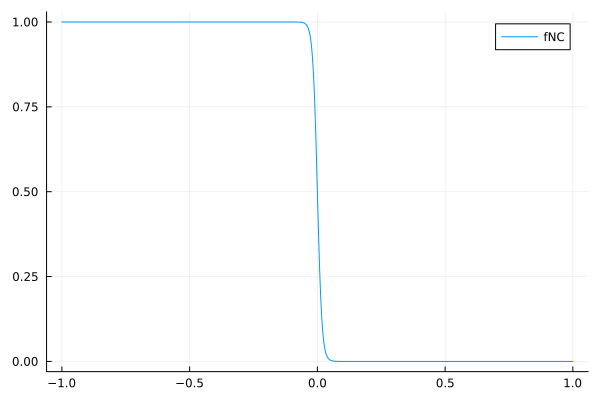
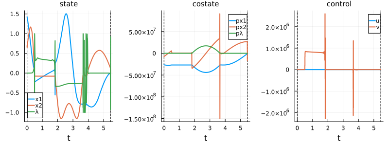
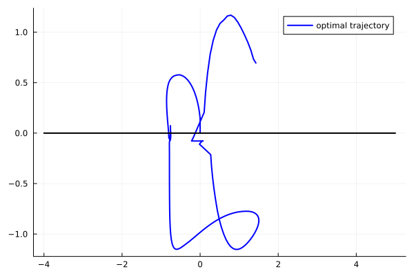
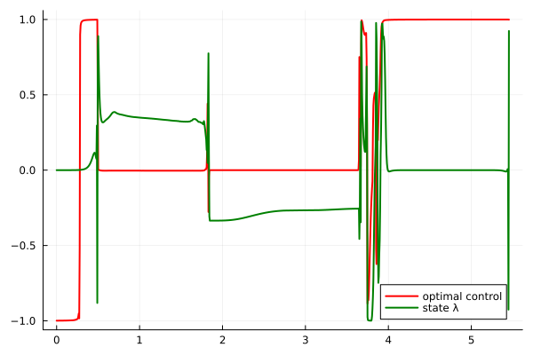
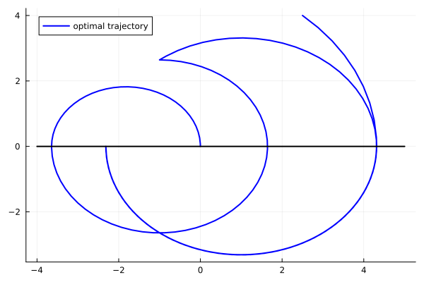
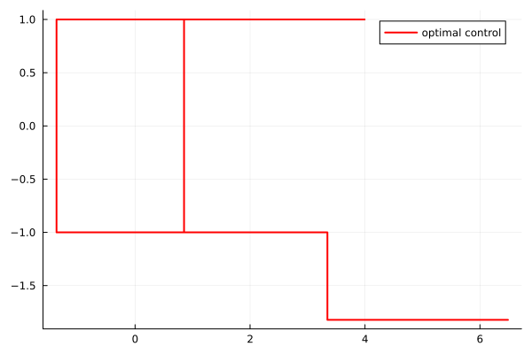
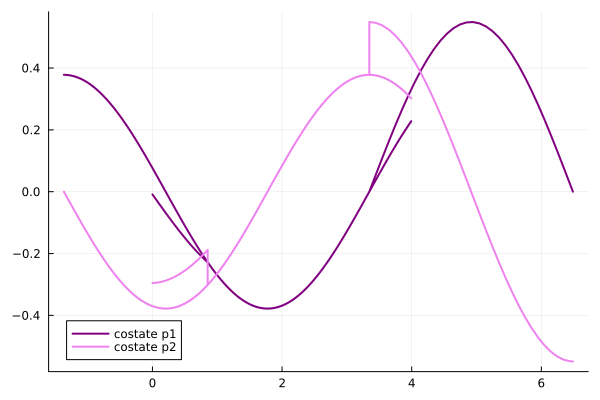
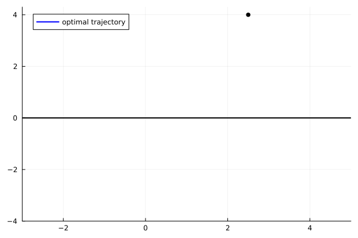
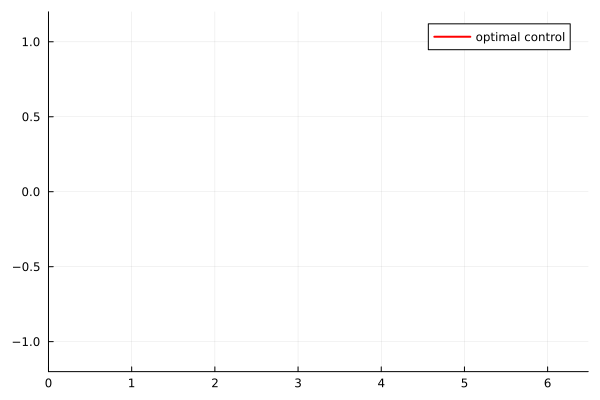
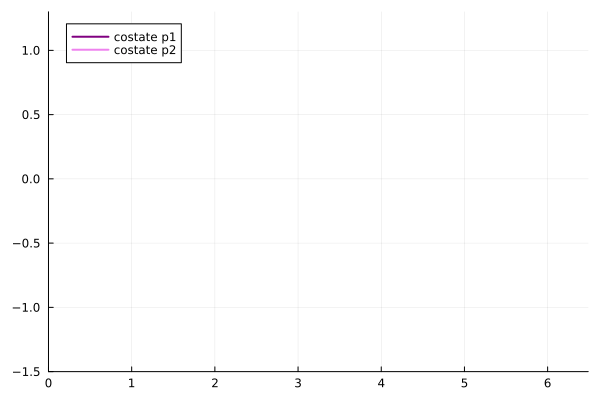

Harmonic oscillator problem
This example considers a minimum time problem for the harmonic oscillator with a loss control region. Unlike the classical harmonic oscillator problem (without loss control region), optimal trajectories spiral around the origin and are expected to visit the loss control region multiple times. At each visit, the constant control value can be modified, which is a key feature of loss control regions.
The main challenge here is that the trajectory spirals in a finite number of times before reaching the target, requiring careful handling of multiple visits to the loss control region.
Problem statement
\[ \left\{ \begin{array}{l} \displaystyle \min\, T, \\[0.5em] \dot{x}_1(t) = x_2(t), \; t\in [0,T]\\[0.5em] \dot{x}_2(t) = u(t)-x_1(t), t\in [0,T] \\[0.5em] u(t) \in [-1, 1], \; t\in [0,T]\\[0.5em] x(0) = (4.2,0) , \quad x(T) = 0_{\mathrm{R}^2}, \\[0.5em] \{x \mid x_2 < 0\} \text{ is a control loss region.} \end{array} \right.\]
The partition of $\mathbb{R}^2$ consists of:
- Control region: $X_1 = \{x \in \mathbb{R}^2 \mid x_2 > 0\}$ (where control can change at any time)
- Loss control region: $X_2 = \{x \in \mathbb{R}^2 \mid x_2 < 0\}$ (where control must remain constant)
Note that the final time $T$ is free in this problem, which can be handled using standard augmentation techniques.
Reformulation for the direct method
\[ \left\{ \begin{array}{l} \displaystyle \min\, T + \varepsilon \int_0^T v^2(t)\, \mathrm{d}t + \int_0^T f_{NC}(x_2(t))u^2(t)\, \mathrm{d}t, \\[0.5em] \dot{x}_1(t) = x_2(t), \; t\in [0,T]\\[0.5em] \dot{x}_2(t) =f_{C}(x_2(t))(u(t) - x_1(t)) + f_{NC}(x_2(t))(\lambda(t) - x_1(t)) , t\in [0,T] \\[0.5em] \dot{\lambda}(t) = f_C(x_2(t))v(t),\; t\in [0,T]\\[0.5em] u(t) \in [-1, 1] \; t\in [0,T]\\[0.5em] x(0) = (4.2,0) , \quad x(T) = 0_{\mathrm{R}^2}. \end{array} \right.\]
using Plots
using Plots.PlotMeasures
using OptimalControl
using NLPModelsIpopt
include("smooth.jl")fNC(x) = fNC_unboundedminus(x, 0, 0.018)
plot(fNC, -1, 1, label="fNC")
const ε = 1e-3
@def ocp begin
tf ∈ R, variable
t ∈ [ 0, tf ], time
q = [ x1, x2, λ ] ∈ R^3, state
ω = [u, v] ∈ R^2, control
tf ≥ 0.
x1(0) == 2.5
x2(0) == 4
x1(tf) == 0
x2(tf) == 0
-1 ≤ u(t) ≤ 1
-1 ≤ λ(t) ≤ 1, (1)
-5 ≤ x1(t) ≤ 5, (2)
-5 ≤ x2(t) ≤ 5, (3)
q̇(t) == [
x2(t),
(1-fNC(x2(t)))*u(t) + fNC(x2(t))*λ(t) - x1(t),
(1-fNC(x2(t)))*v(t),
]
tf + ∫(ε*(v(t))^2 +fNC(x2(t))*(u(t))^2) → min
endsol = (
state = t -> [0.1, 0.1, 1],
control = [-1, 0],
variable = 15,
)
for N in [50, 100, 500, 1000]
global sol = solve(ocp, :collocation, :adnlp, :ipopt;
scheme=:gauss_legendre_3,
grid_size=N,
init=sol,
tol=1e-8,
display = N == 1000,
)
end
N = 1000▫ This is OptimalControl 2.0.4, solving with: collocation → adnlp → ipopt (cpu)
📦 Configuration:
├─ Discretizer: collocation (grid_size = 1000, scheme = gauss_legendre_3)
├─ Modeler: adnlp
└─ Solver: ipopt (tol = 1.0e-8)
▫ This is Ipopt version 3.14.19, running with linear solver MUMPS 5.8.2.
Number of nonzeros in equality constraint Jacobian...: 99004
Number of nonzeros in inequality constraint Jacobian.: 0
Number of nonzeros in Lagrangian Hessian.............: 73001
Total number of variables............................: 18004
variables with only lower bounds: 1
variables with lower and upper bounds: 6003
variables with only upper bounds: 0
Total number of equality constraints.................: 12004
Total number of inequality constraints...............: 0
inequality constraints with only lower bounds: 0
inequality constraints with lower and upper bounds: 0
inequality constraints with only upper bounds: 0
iter objective inf_pr inf_du lg(mu) ||d|| lg(rg) alpha_du alpha_pr ls
0 2.0079674e+04 7.46e+02 9.90e+01 0.0 0.00e+00 - 0.00e+00 0.00e+00 0
1 1.9675468e+04 7.43e+02 9.84e+01 -5.6 1.47e+03 -4.0 8.32e-03 4.51e-03f 1
2 1.7533429e+04 7.35e+02 9.62e+01 0.2 8.13e+03 -4.5 3.08e-03 5.22e-03f 1
3 1.7473646e+04 7.35e+02 1.48e+02 0.2 1.47e+04 -5.0 7.05e-03 2.51e-04f 1
4 1.7330677e+04 7.33e+02 3.23e+02 -0.1 1.78e+04 -5.4 7.51e-03 1.37e-03f 1
5 1.7343521e+04 7.31e+02 3.48e+02 -0.7 4.82e+04 -5.9 3.83e-03 9.84e-04h 1
6 1.7263663e+04 7.30e+02 1.21e+03 2.1 3.34e+06 -6.4 3.58e-04 1.51e-04f 1
7 1.7246718e+04 7.30e+02 1.01e+03 -5.6 2.76e+05 -6.9 2.18e-03 1.27e-04f 1
8 1.5516225e+04 4.58e+03 9.33e+02 0.9 7.12e+05 -7.3 3.42e-03 1.64e-02f 1
9 1.2857145e+04 4.28e+03 8.84e+02 0.2 5.41e+04 - 1.34e-02 5.32e-02f 2
iter objective inf_pr inf_du lg(mu) ||d|| lg(rg) alpha_du alpha_pr ls
10 1.1649975e+04 4.08e+03 8.42e+02 0.0 2.14e+04 -6.9 5.21e-02 4.62e-02h 1
11 1.1561607e+04 4.06e+03 8.36e+02 -5.6 2.74e+04 -7.4 3.35e-02 4.98e-03h 1
12 1.1557368e+04 4.06e+03 8.36e+02 -5.7 1.96e+05 - 6.82e-04 2.23e-04h 1
13 1.1425689e+04 3.99e+03 4.88e+04 -1.8 1.33e+05 - 3.62e-04 1.65e-02f 1
14 1.1453707e+04 3.96e+03 4.60e+04 -5.7 7.67e+04 - 1.51e-02 6.52e-03h 1
15 1.1412966e+04 3.94e+03 4.55e+04 -5.7 2.48e+05 - 6.01e-03 5.32e-03h 1
16 1.1657396e+04 3.90e+03 4.53e+04 -5.7 6.99e+04 - 1.02e-02 1.13e-02h 1
17 1.1884560e+04 3.88e+03 5.08e+04 0.2 2.00e+05 - 8.96e-03 4.51e-03h 1
18 1.3998333e+04 3.79e+03 9.87e+04 0.2 1.55e+05 - 3.01e-03 2.27e-02h 1
19 1.4461078e+04 3.78e+03 8.14e+04 0.2 1.29e+05 - 8.60e-02 3.41e-03h 1
iter objective inf_pr inf_du lg(mu) ||d|| lg(rg) alpha_du alpha_pr ls
20 2.8415018e+04 3.59e+03 7.26e+04 0.2 1.96e+05 - 7.12e-02 4.94e-02h 1
21 4.1840605e+04 3.52e+03 9.74e+04 0.2 2.62e+05 - 5.40e-02 2.14e-02h 1
22 7.7791757e+04 3.40e+03 9.53e+04 0.2 3.43e+05 - 9.65e-04 3.26e-02h 1
23 1.0050682e+05 3.36e+03 7.14e+04 0.2 4.35e+05 - 2.12e-02 1.21e-02h 1
24 1.0772971e+05 3.35e+03 1.33e+05 0.2 5.19e+05 - 2.19e-02 2.95e-03h 1
25 1.2421935e+05 3.33e+03 1.33e+05 0.2 5.85e+05 - 6.21e-03 5.95e-03h 1
26 1.3948600e+05 3.31e+03 1.36e+05 0.2 5.64e+05 - 5.62e-03 4.80e-03h 1
27 1.5221152e+05 3.30e+03 1.54e+05 0.2 6.06e+05 - 7.93e-03 3.60e-03h 1
28 1.6846378e+05 3.29e+03 1.68e+05 0.2 6.25e+05 - 7.40e-03 4.15e-03h 1
29 2.0282253e+05 3.26e+03 1.45e+05 0.2 6.74e+05 - 3.00e-03 7.74e-03h 1
iter objective inf_pr inf_du lg(mu) ||d|| lg(rg) alpha_du alpha_pr ls
30 2.0504248e+05 3.26e+03 2.21e+05 0.2 7.40e+05 - 1.07e-02 4.35e-04h 1
31 2.4074211e+05 3.24e+03 1.71e+05 0.2 7.58e+05 - 1.05e-03 6.58e-03h 1
32 2.4398155e+05 3.24e+03 2.39e+05 0.2 8.22e+05 - 6.27e-03 5.31e-04h 1
33 2.8608461e+05 3.22e+03 1.73e+05 0.2 8.42e+05 - 8.73e-04 6.50e-03h 1
34 2.8928431e+05 3.22e+03 3.71e+05 0.2 9.12e+05 - 1.19e-02 4.40e-04h 1
35 3.9108350e+05 3.18e+03 1.72e+05 0.2 9.34e+05 - 6.66e-04 1.26e-02h 1
36 3.9362224e+05 3.17e+03 6.59e+05 0.2 1.11e+06 - 2.13e-02 2.54e-04h 1
37 4.9921243e+05 3.14e+03 4.12e+05 0.2 1.12e+06 - 4.40e-04 9.70e-03h 1
38 5.0365227e+05 3.14e+03 7.62e+05 0.2 1.28e+06 - 1.16e-02 3.44e-04h 1
39 6.3105778e+05 3.11e+03 4.85e+05 0.2 1.30e+06 - 3.91e-04 9.12e-03h 1
iter objective inf_pr inf_du lg(mu) ||d|| lg(rg) alpha_du alpha_pr ls
40 6.3644942e+05 3.11e+03 1.56e+06 0.2 1.48e+06 - 3.10e-02 3.28e-04h 1
41 1.1223185e+06 3.04e+03 6.44e+05 0.2 1.50e+06 - 5.04e-04 2.48e-02h 1
42 1.1289373e+06 3.04e+03 9.72e+06 0.2 2.13e+06 - 1.54e-01 2.24e-04h 1
43 4.9295047e+06 2.79e+03 4.88e+06 0.2 2.14e+06 - 1.92e-03 8.05e-02h 1
44 5.0249136e+06 2.79e+03 1.49e+07 1.5 5.41e+06 - 2.30e-02 7.30e-04h 1
45 9.2935547e+06 3.02e+03 7.07e+06 0.8 5.41e+06 - 1.19e-02 2.71e-02h 1
46 1.7978923e+07 3.61e+03 2.68e+07 1.9 7.12e+06 - 9.75e-04 2.97e-02h 1
47 1.9983829e+07 3.62e+03 2.45e+07 2.5 1.02e+07 - 6.22e-03 4.47e-03f 1
48 2.5995611e+07 3.73e+03 2.42e+07 2.7 1.07e+07 - 1.65e-02 1.14e-02f 1
49 2.8739375e+07 3.73e+03 1.89e+09 2.8 1.18e+07 - 1.00e+00 4.31e-03h 1
iter objective inf_pr inf_du lg(mu) ||d|| lg(rg) alpha_du alpha_pr ls
50 6.0210127e+08 2.74e+04 1.26e+09 3.4 1.21e+07 - 5.12e-02 2.94e-01h 1
51 6.6041532e+08 2.73e+04 2.87e+09 3.4 4.16e+07 - 4.52e-02 3.26e-03h 1
52 1.8061111e+09 2.63e+04 1.84e+09 3.4 5.38e+07 - 1.80e-02 3.82e-02h 1
53 2.8914060e+09 2.60e+04 9.52e+08 -3.1 1.15e+08 - 1.08e-02 1.85e-02h 1
54 4.5022028e+09 2.56e+04 4.36e+09 3.4 1.41e+08 - 6.62e-04 1.88e-02h 1
55 6.0198824e+09 2.54e+04 6.81e+10 3.4 1.66e+08 - 1.93e-01 1.29e-02h 1
56 2.5236384e+10 2.61e+04 6.24e+10 3.4 1.86e+08 - 9.11e-02 9.01e-02h 2
57 5.1089377e+10 2.57e+04 1.53e+12 3.4 3.21e+08 - 1.00e+00 4.48e-02h 1
MUMPS returned INFO(1) = -9 and requires more memory, reallocating. Attempt 1
Increasing icntl[13] from 1000 to 2000.
MUMPS returned INFO(1) = -9 and requires more memory, reallocating. Attempt 2
Increasing icntl[13] from 2000 to 4000.
58 5.2553664e+10 2.57e+04 1.75e+12 3.4 3.50e+09 - 8.53e-03 8.67e-04h 7
59 1.1223153e+11 2.53e+04 2.80e+12 2.9 4.14e+08 - 8.87e-01 5.54e-02h 4
iter objective inf_pr inf_du lg(mu) ||d|| lg(rg) alpha_du alpha_pr ls
60 2.2073236e+11 2.43e+04 3.02e+12 2.5 4.08e+08 - 3.41e-01 7.33e-02h 4
MUMPS returned INFO(1) = -9 and requires more memory, reallocating. Attempt 1
Increasing icntl[13] from 4000 to 8000.
61 2.2073538e+11 3.05e+04 2.31e+13 2.3 1.51e-02 14.5 1.00e+00 1.00e+00h 1
MUMPS returned INFO(1) = -9 and requires more memory, reallocating. Attempt 1
Increasing icntl[13] from 8000 to 16000.
62r 2.2073538e+11 3.05e+04 9.99e+02 3.1 0.00e+00 14.0 0.00e+00 4.94e-09R 2
63r 2.2106022e+11 1.25e+03 1.20e+03 -3.1 5.19e+07 - 1.20e-01 9.90e-04f 1
64 2.2106022e+11 1.25e+03 1.18e+09 1.0 2.08e+08 - 3.71e-09 2.46e-09f 1
65r 2.2106022e+11 1.25e+03 9.99e+02 2.4 0.00e+00 13.5 0.00e+00 5.28e-12R 2
66r 2.2222769e+11 1.20e+03 9.99e+02 0.3 8.73e+08 - 2.13e-04 1.02e-03f 1
67r 2.2654079e+11 1.15e+03 9.99e+02 1.8 3.00e+10 - 2.34e-05 1.27e-03f 1
68r 2.2802522e+11 1.08e+03 9.98e+02 0.3 7.57e+08 - 9.97e-04 1.38e-03f 1
69r 2.2982699e+11 1.25e+03 9.95e+02 -3.8 3.79e+04 -4.0 2.57e-03 2.24e-03f 1
iter objective inf_pr inf_du lg(mu) ||d|| lg(rg) alpha_du alpha_pr ls
70r 2.3605023e+11 3.75e+03 3.22e+04 1.6 3.84e+04 -3.6 2.21e-03 5.58e-03f 1
71r 2.4018985e+11 3.83e+03 3.19e+04 1.2 2.87e+04 -4.1 9.48e-02 8.54e-03f 1
72r 2.5472933e+11 6.82e+03 2.92e+04 0.9 7.19e+03 -4.5 8.15e-02 9.01e-02f 1
73r 2.5265622e+11 5.82e+03 2.52e+04 0.6 1.36e+03 -4.1 8.89e-01 1.50e-01f 1
74r 2.1086325e+11 3.00e+04 1.07e+04 0.6 1.84e+02 -4.6 8.88e-01 8.61e-01f 1
75r 2.3038314e+11 1.32e+04 4.42e+03 0.8 2.25e+02 -5.1 1.00e+00 9.64e-01f 1
76r 2.4070694e+11 1.43e+03 1.97e+03 0.6 5.90e+02 -5.5 9.25e-01 1.00e+00f 1
77r 2.3888853e+11 6.09e+02 8.83e+02 -0.0 1.92e+03 -6.0 9.96e-01 8.61e-01f 1
78 2.3887978e+11 6.08e+02 3.51e+16 2.4 2.90e+03 13.0 1.86e-03 1.11e-03f 1
MUMPS returned INFO(1) = -9 and requires more memory, reallocating. Attempt 1
Increasing icntl[13] from 16000 to 32000.
79 2.3887969e+11 6.08e+02 3.51e+16 2.4 2.91e+03 12.5 1.68e-01 1.12e-05f 1
iter objective inf_pr inf_du lg(mu) ||d|| lg(rg) alpha_du alpha_pr ls
80r 2.3887969e+11 6.08e+02 9.93e+02 3.4 0.00e+00 12.1 0.00e+00 5.65e-08R 2
81r 2.3894401e+11 1.51e+02 1.51e+01 -2.8 1.71e+06 - 9.85e-01 7.64e-02f 1
82r 2.3894401e+11 1.51e+02 9.64e+02 2.4 0.00e+00 11.6 0.00e+00 5.69e-08R 2
83r 2.3896258e+11 1.26e+02 5.62e+01 -3.8 1.30e+07 - 9.70e-01 3.55e-02f 1
84r 2.3896258e+11 1.26e+02 8.62e+02 2.4 0.00e+00 11.1 0.00e+00 6.10e-08R 2
85r 2.3914558e+11 6.82e+01 3.75e+01 -3.8 5.48e+06 - 9.75e-01 1.37e-01f 1
86r 2.3914558e+11 6.82e+01 7.19e+02 2.4 0.00e+00 10.6 0.00e+00 7.65e-08R 2
87r 2.3976619e+11 4.31e+01 4.75e+01 -3.8 4.50e+06 - 9.67e-01 2.78e-01f 1
88r 2.4070143e+11 4.18e+01 2.77e+01 -3.9 8.01e+01 -4.0 4.52e-01 5.44e-01f 1
89r 2.5020594e+11 9.75e+02 4.06e+01 -0.4 5.28e+02 -4.5 2.13e-02 9.36e-02f 1
iter objective inf_pr inf_du lg(mu) ||d|| lg(rg) alpha_du alpha_pr ls
90r 2.4421090e+11 5.62e+02 6.41e+01 -4.3 5.78e+01 -5.0 2.98e-02 8.31e-01f 1
91r 2.4116060e+11 5.28e+02 8.49e+01 -1.2 2.33e+02 -5.4 1.00e+00 2.33e-01f 1
92r 2.3588668e+11 4.09e+02 8.03e+01 -0.8 8.18e+02 -5.9 1.00e+00 8.29e-01f 1
93r 2.3276416e+11 7.47e+02 1.62e+02 -0.4 2.59e+03 -6.4 1.00e+00 9.38e-01f 1
94r 2.3195308e+11 3.14e+02 6.95e+01 -0.3 1.63e+03 -6.9 8.48e-01 7.47e-01f 1
95r 2.2983415e+11 5.05e+01 5.90e+01 -0.6 2.72e+03 -7.3 1.00e+00 9.16e-01f 1
96r 2.2929485e+11 1.16e+02 1.20e+02 -0.7 7.38e+03 -7.8 9.89e-01 1.00e+00f 1
97r 2.2898531e+11 2.73e+02 1.22e+02 -1.2 2.04e+04 -8.3 1.00e+00 6.70e-01f 1
98r 2.2890899e+11 4.75e+02 2.71e+02 -1.4 5.00e+04 -8.8 1.00e+00 3.89e-01f 1
99r 2.2879563e+11 6.55e+02 1.69e+02 -1.2 5.36e+04 -9.2 1.00e+00 4.68e-01f 1
iter objective inf_pr inf_du lg(mu) ||d|| lg(rg) alpha_du alpha_pr ls
100r 2.2855331e+11 3.14e+02 5.33e+01 -1.4 2.45e+04 -9.7 1.00e+00 1.00e+00f 1
101r 2.2862432e+11 1.01e+02 7.31e+01 -1.7 4.39e+04 -10.2 1.00e+00 1.00e+00f 1
102r 2.2859783e+11 5.92e+02 5.89e+01 -1.9 1.20e+05 -10.7 1.00e+00 1.00e+00f 1
103r 2.2866879e+11 5.79e+02 2.14e+02 -1.9 2.16e+05 -11.2 1.00e+00 5.23e-01f 1
104r 2.2872899e+11 4.99e+02 2.13e+02 -2.1 7.79e+05 -11.6 4.31e-01 2.15e-01f 1
105r 2.2872797e+11 4.99e+02 2.13e+02 -7.9 2.17e+08 -11.2 1.07e-04 4.05e-04h 1
106r 2.2873461e+11 3.19e+02 3.73e+02 -1.7 7.86e+02 -6.3 5.96e-01 3.59e-01f 1
107r 2.2874449e+11 2.97e+01 2.38e+02 -1.9 1.86e+02 -6.7 6.37e-01 1.00e+00h 1
108r 2.2874190e+11 1.16e+01 2.38e+00 -2.0 7.67e+01 -7.2 1.00e+00 1.00e+00h 1
109r 2.2876989e+11 6.16e+01 1.41e+01 -2.3 2.92e+02 -7.7 9.17e-01 1.00e+00f 1
iter objective inf_pr inf_du lg(mu) ||d|| lg(rg) alpha_du alpha_pr ls
110r 2.2873360e+11 2.41e+01 7.68e-01 -2.0 3.57e+02 -8.2 1.00e+00 1.00e+00f 1
111r 2.2876075e+11 1.92e+00 2.01e+01 -2.2 1.55e+03 -8.7 8.83e-01 1.00e+00f 1
112r 2.2877147e+11 1.22e+02 6.98e+00 -2.5 5.55e+03 -9.1 1.00e+00 9.62e-01f 1
113r 2.2876213e+11 1.71e+01 2.25e+01 -2.2 7.33e+03 -9.6 1.00e+00 9.07e-01f 1
114r 2.2880428e+11 1.81e+01 3.27e-01 -2.4 1.93e+04 -10.1 1.00e+00 1.00e+00f 1
115r 2.2883135e+11 9.07e+01 1.18e+02 -2.0 6.15e+04 -10.6 1.00e+00 7.89e-01f 1
116r 2.2889663e+11 5.67e+01 2.21e+02 -2.1 1.98e+05 -11.0 7.40e-01 3.91e-01h 1
117r 2.2895112e+11 3.12e+01 2.77e+02 -2.1 7.33e+04 -10.6 1.00e+00 6.12e-01h 1
118r 2.2900107e+11 2.07e+01 4.01e+02 -2.1 2.35e+05 -11.1 1.00e+00 3.83e-01h 1
119r 2.2904181e+11 7.47e+00 2.03e+02 -2.1 8.66e+04 -10.7 1.00e+00 6.99e-01h 1
iter objective inf_pr inf_du lg(mu) ||d|| lg(rg) alpha_du alpha_pr ls
120r 2.2908018e+11 5.19e+00 4.48e+02 -2.1 2.80e+05 -11.1 1.00e+00 3.10e-01h 1
121r 2.2913876e+11 2.70e+01 5.98e+02 -2.1 1.01e+06 -11.6 1.00e+00 2.08e-01f 1
122r 2.2972042e+11 3.61e+03 1.81e+03 -2.1 8.21e+06 -12.1 5.48e-01 5.49e-01f 1
123r 2.2974858e+11 3.17e+03 1.59e+03 -2.1 5.13e+02 -4.2 1.81e-01 1.22e-01h 1
124r 2.2976028e+11 3.16e+03 1.59e+03 -2.1 2.63e+04 -4.7 1.35e-02 1.06e-03f 1
125r 2.2975995e+11 3.16e+03 1.58e+03 -2.1 1.86e+02 -5.2 2.25e-01 2.47e-03h 1
126r 2.2970271e+11 7.08e+02 8.25e+02 -2.1 3.76e+02 -5.7 9.07e-01 7.29e-01h 1
127r 2.2962565e+11 3.73e+02 5.47e+02 -2.1 1.80e+02 -6.2 1.40e-01 4.69e-01h 1
128r 2.2964162e+11 3.65e+02 5.35e+02 -2.1 4.42e+02 -6.6 5.27e-03 2.25e-02h 1
129r 2.2989209e+11 2.76e+02 2.98e+02 -2.1 7.12e+02 -7.1 2.80e-01 4.39e-01f 1
iter objective inf_pr inf_du lg(mu) ||d|| lg(rg) alpha_du alpha_pr ls
130r 2.2989593e+11 2.70e+02 2.92e+02 -2.1 6.08e+02 -7.6 3.14e-01 2.20e-02h 1
131r 2.2991783e+11 1.63e+02 5.20e+02 -2.1 3.08e+02 -8.1 1.00e+00 3.98e-01h 1
132r 2.2994750e+11 3.13e+00 3.79e+01 -2.1 5.23e+02 -8.5 1.00e+00 1.00e+00h 1
133 2.2994697e+11 3.13e+00 9.82e+11 2.4 9.88e+02 10.2 8.17e-03 3.78e-04f 2
134 2.2994644e+11 3.13e+00 1.31e+12 2.6 9.87e+02 9.7 2.24e-03 3.82e-04h 1
135r 2.2994644e+11 3.13e+00 9.98e+02 2.7 0.00e+00 9.2 0.00e+00 4.75e-07R 4
136r 2.2997397e+11 1.62e+00 2.11e+01 -3.5 3.53e+04 - 9.79e-01 7.59e-01f 1
137r 2.2997397e+11 1.62e+00 2.91e+02 2.4 0.00e+00 8.7 0.00e+00 4.82e-07R 4
138r 2.3001770e+11 6.55e-01 7.31e+00 -3.8 2.71e+04 - 9.75e-01 7.02e-01f 1
139r 2.3001770e+11 6.55e-01 1.65e+02 2.4 0.00e+00 8.3 0.00e+00 2.64e-07R 5
iter objective inf_pr inf_du lg(mu) ||d|| lg(rg) alpha_du alpha_pr ls
140r 2.3004503e+11 4.28e-01 2.80e+00 -3.8 2.59e+04 - 9.83e-01 8.27e-01f 1
141r 2.3004503e+11 4.28e-01 1.17e+02 2.4 0.00e+00 7.8 0.00e+00 2.92e-07R 5
142r 2.3006010e+11 3.19e-01 1.59e+00 -3.8 2.52e+04 - 9.86e-01 8.74e-01f 1
143r 2.3006010e+11 3.19e-01 9.09e+01 2.4 0.00e+00 7.3 0.00e+00 3.23e-07R 5
144r 2.3006956e+11 2.56e-01 1.04e+00 -3.8 2.45e+04 - 9.89e-01 9.00e-01f 1
145r 2.3006956e+11 2.56e-01 7.43e+01 2.4 0.00e+00 6.8 0.00e+00 3.55e-07R 5
146r 2.3007534e+11 2.12e-01 7.99e-01 -3.8 2.39e+04 - 9.89e-01 9.16e-01f 1
147r 2.3007534e+11 2.12e-01 6.27e+01 2.4 0.00e+00 6.3 0.00e+00 3.89e-07R 5
148r 2.3007975e+11 1.82e-01 6.57e-01 -3.8 2.32e+04 - 9.90e-01 9.28e-01f 1
149r 2.3007975e+11 1.82e-01 5.42e+01 2.4 0.00e+00 5.9 0.00e+00 4.26e-07R 5
iter objective inf_pr inf_du lg(mu) ||d|| lg(rg) alpha_du alpha_pr ls
150r 2.3008298e+11 1.58e-01 5.46e-01 -3.8 2.27e+04 - 9.90e-01 9.36e-01f 1
151r 2.3008298e+11 1.58e-01 4.76e+01 2.4 0.00e+00 5.4 0.00e+00 4.64e-07R 5
152r 2.3008600e+11 1.41e-01 4.84e-01 -3.8 2.21e+04 - 9.90e-01 9.43e-01f 1
153 2.3008600e+11 1.41e-01 1.21e+09 2.4 8.45e+02 4.9 1.46e-02 2.02e-06f 3
154 2.3008593e+11 1.41e-01 1.21e+09 2.8 8.68e+02 4.4 1.44e-02 4.62e-05f 4
155 2.3008481e+11 1.41e-01 1.21e+09 3.2 7.99e+02 4.0 3.46e-03 8.71e-04h 1
156 2.3008445e+11 1.41e-01 1.21e+09 3.3 6.89e+02 3.5 6.30e-03 3.33e-04h 1
157 2.3008391e+11 1.41e-01 1.21e+09 3.4 8.48e+02 3.0 2.67e-03 6.98e-04h 1
158 2.3008261e+11 1.40e-01 1.20e+09 3.4 1.02e+03 2.5 4.39e-03 1.39e-03h 1
159 2.3008242e+11 1.40e-01 1.20e+09 3.4 1.06e+03 2.0 3.57e-03 1.92e-04f 4
iter objective inf_pr inf_du lg(mu) ||d|| lg(rg) alpha_du alpha_pr ls
160 2.3008126e+11 1.40e-01 1.20e+09 3.4 1.14e+03 1.6 4.87e-03 1.24e-03f 2
161 2.3008072e+11 1.40e-01 1.20e+09 3.4 1.18e+03 1.1 9.41e-03 5.95e-04f 2
162 2.3008071e+11 1.40e-01 1.20e+09 3.4 1.42e+03 0.6 5.67e-03 3.21e-05h 6
163 2.3007896e+11 1.40e-01 1.20e+09 3.4 1.01e+04 0.1 6.17e-03 1.10e-03h 1
164 2.3006698e+11 4.17e-01 1.20e+09 3.4 1.99e+05 -0.3 1.38e-03 7.25e-04f 1
165 2.3006420e+11 4.50e-01 1.20e+09 2.0 4.11e+05 -0.8 1.30e-03 1.02e-04f 1
166 2.3005518e+11 7.37e-01 1.20e+09 2.0 6.17e+05 -1.3 2.64e-03 7.29e-04f 1
167 2.3001203e+11 7.98e+00 1.19e+09 2.0 6.37e+05 -1.8 2.14e-03 3.40e-03f 1
168 2.3000998e+11 8.03e+00 1.19e+09 2.0 6.34e+05 -2.2 3.68e-03 1.76e-04f 1
169 2.2998825e+11 2.46e+01 1.19e+09 2.0 6.26e+05 -2.7 2.92e-03 2.04e-03f 1
iter objective inf_pr inf_du lg(mu) ||d|| lg(rg) alpha_du alpha_pr ls
170 2.2997845e+11 2.55e+01 1.19e+09 2.0 6.41e+05 -2.3 5.70e-03 1.03e-03f 1
171 2.2996814e+11 2.69e+01 1.19e+09 2.0 6.63e+05 -2.8 1.21e-02 2.34e-03f 1
172 2.2996070e+11 2.72e+01 1.18e+09 2.0 6.88e+05 -2.3 2.15e-02 4.59e-03f 1
173 2.2995682e+11 3.46e+01 1.16e+09 2.0 6.82e+05 -2.8 3.48e-02 1.67e-02f 1
174 2.2994934e+11 5.85e+01 1.14e+09 2.0 6.78e+05 -3.3 1.05e-01 2.00e-02f 1
175 2.2994536e+11 5.84e+01 1.13e+09 2.0 7.23e+05 -3.8 1.79e-01 3.96e-03f 1
176 2.2993805e+11 5.89e+01 1.11e+09 2.9 6.55e+05 -3.4 1.53e-02 1.91e-02h 1
177 2.2993600e+11 5.92e+01 1.10e+09 3.4 6.41e+05 -2.9 2.73e-02 1.43e-02h 2
178 2.2993268e+11 5.91e+01 1.09e+09 3.4 6.40e+05 -3.4 2.57e-01 7.67e-03h 3
179 2.2993028e+11 5.90e+01 1.09e+09 3.4 9.46e+05 -3.9 4.02e-03 2.12e-03h 1
iter objective inf_pr inf_du lg(mu) ||d|| lg(rg) alpha_du alpha_pr ls
180 2.2992930e+11 5.89e+01 1.08e+09 -2.9 6.37e+05 -3.5 1.76e-02 2.36e-03f 1
181 2.2992415e+11 5.88e+01 1.08e+09 3.4 1.76e+06 -3.9 2.41e-04 4.78e-03h 1
182 2.2992410e+11 5.88e+01 1.08e+09 3.4 6.65e+05 -3.5 1.10e-01 1.31e-04h 1
183 2.2993448e+11 5.86e+01 1.07e+09 -2.2 2.03e+06 -4.0 5.14e-03 4.02e-03h 2
184 2.2993688e+11 7.00e+01 1.07e+09 3.4 3.88e+06 -3.6 8.02e-05 1.34e-03h 1
185 2.2993707e+11 7.00e+01 1.07e+09 3.4 4.30e+06 -4.0 9.70e-03 2.95e-05h 1
186 2.2994819e+11 7.00e+01 1.66e+09 3.4 3.58e+06 -3.6 1.15e-02 2.03e-03h 3
187 2.3002783e+11 2.22e+02 1.66e+09 3.4 1.98e+07 -4.1 2.48e-03 2.48e-03s 14
188 2.3023411e+11 2.66e+03 1.66e+09 2.7 2.58e+08 -4.6 5.07e-04 5.07e-04s 13
189 2.3039147e+11 3.23e+03 1.66e+09 2.0 4.67e+08 -4.1 8.91e-05 8.91e-05s 11
iter objective inf_pr inf_du lg(mu) ||d|| lg(rg) alpha_du alpha_pr ls
190 2.3054421e+11 3.37e+03 1.66e+09 2.0 1.00e+08 -4.6 1.61e-04 1.61e-04s 11
191 2.3067223e+11 3.37e+03 1.66e+09 2.0 5.58e+06 -4.2 5.12e-04 5.12e-04s 11
192r 2.3067223e+11 3.37e+03 9.99e+02 3.3 0.00e+00 -4.7 0.00e+00 0.00e+00R 1
193r 2.3056307e+11 2.34e+02 5.85e+02 -2.8 3.44e+08 - 5.43e-01 9.90e-04f 1
194 2.3054434e+11 2.34e+02 1.21e+09 2.0 2.89e+08 -5.1 1.39e-08 9.51e-07f 1
195 2.3052867e+11 2.34e+02 1.21e+09 2.0 2.83e+08 -4.7 2.15e-07 3.95e-07f 1
196 2.3052267e+11 2.34e+02 1.21e+09 2.0 3.71e+07 -3.4 4.49e-07 2.07e-07f 1
197 2.3049371e+11 2.34e+02 1.21e+09 2.0 1.02e+08 -3.9 4.27e-07 4.28e-07f 1
198 2.3048452e+11 2.34e+02 1.21e+09 2.0 6.16e+07 -4.3 2.66e-07 1.18e-06f 1
199 2.3047476e+11 2.35e+02 1.21e+09 2.0 4.30e+07 -3.9 1.47e-08 1.81e-06f 1
iter objective inf_pr inf_du lg(mu) ||d|| lg(rg) alpha_du alpha_pr ls
200 2.3046701e+11 2.35e+02 1.21e+09 2.0 1.88e+07 -3.5 1.93e-05 3.11e-06f 1
201 2.3038413e+11 2.40e+02 1.21e+09 2.0 4.12e+08 -4.0 3.36e-07 1.41e-06f 1
202 2.3036490e+11 2.40e+02 1.21e+09 2.0 1.08e+10 -2.6 1.07e-08 2.86e-09f 1
203 2.3032597e+11 2.40e+02 1.21e+09 2.0 3.42e+06 -2.2 6.57e-07 1.51e-05f 1
204 2.3032550e+11 2.40e+02 1.21e+09 2.0 1.53e+06 -2.7 5.54e-07 6.96e-07f 1
205 2.3032191e+11 2.40e+02 1.21e+09 2.0 1.19e+08 - 1.65e-07 7.06e-06f 1
206 2.3032165e+11 2.40e+02 1.21e+09 2.0 2.56e+06 -3.2 1.07e-05 2.34e-07f 1
207 2.3031287e+11 2.40e+02 1.21e+09 2.0 1.12e+08 - 1.46e-07 1.78e-05f 1
208 2.3031236e+11 2.40e+02 1.21e+09 2.0 2.79e+06 -3.6 1.30e-05 4.20e-07f 1
209 2.3030129e+11 2.40e+02 1.21e+09 2.0 1.46e+08 - 5.75e-08 1.94e-05f 1
iter objective inf_pr inf_du lg(mu) ||d|| lg(rg) alpha_du alpha_pr ls
210 2.3029928e+11 2.40e+02 1.21e+09 2.0 2.32e+06 -4.1 1.21e-05 1.91e-06f 1
211 2.3029926e+11 2.40e+02 1.21e+09 2.0 1.11e+06 -4.6 2.36e-04 4.19e-08f 1
212 2.3023845e+11 2.40e+02 1.21e+09 2.0 9.90e+07 - 1.28e-04 1.32e-04f 1
213 2.2976193e+11 2.39e+02 1.21e+09 2.0 1.00e+08 - 1.25e-06 1.02e-03f 1
214 2.2975842e+11 2.39e+02 1.21e+09 2.4 6.36e+05 -5.1 9.97e-04 2.23e-05f 1
215 2.2975270e+11 2.39e+02 1.21e+09 -5.6 1.06e+08 - 1.91e-06 1.20e-05f 1
216 2.2975242e+11 2.39e+02 1.21e+09 2.3 2.04e+06 -5.6 9.89e-04 1.80e-06f 1
217 2.2970486e+11 2.39e+02 1.21e+09 2.5 9.77e+07 - 2.83e-05 1.04e-04f 1
218 2.2956492e+11 2.39e+02 1.20e+09 2.5 1.56e+08 - 2.94e-07 2.35e-04f 1
219 2.2954656e+11 2.39e+02 1.20e+09 1.5 3.77e+08 - 5.85e-05 1.65e-05f 1
iter objective inf_pr inf_du lg(mu) ||d|| lg(rg) alpha_du alpha_pr ls
220 2.2946249e+11 2.38e+02 1.20e+09 2.5 4.95e+08 - 5.07e-05 6.05e-05f 1
221 2.2905806e+11 2.40e+02 1.20e+09 2.5 2.15e+08 - 7.42e-04 5.51e-04f 1
222 2.2904662e+11 2.40e+02 1.20e+09 2.5 1.27e+08 - 8.02e-03 2.18e-05f 1
223 2.2886420e+11 2.40e+02 1.20e+09 2.7 9.84e+07 - 1.10e-01 3.98e-04f 1
224 2.2821404e+11 2.11e+02 1.20e+09 2.7 9.44e+07 - 1.89e-03 1.48e-03f 1
225 2.2715707e+11 2.10e+02 1.20e+09 3.4 9.11e+07 - 5.85e-02 2.50e-03f 1
226 2.2714632e+11 2.10e+02 1.20e+09 3.4 3.60e+08 - 1.25e-02 1.50e-03h 1
227 2.2719926e+11 2.10e+02 2.62e+09 3.4 6.51e+08 - 1.17e-02 4.15e-04h 5
228 2.2492698e+11 1.05e+04 6.40e+10 3.4 6.95e+08 - 4.88e-03 1.74e-02H 1
229 2.2494713e+11 1.05e+04 6.40e+10 3.4 5.38e+07 -4.2 3.62e-04 3.02e-04h 1
iter objective inf_pr inf_du lg(mu) ||d|| lg(rg) alpha_du alpha_pr ls
230r 2.2494713e+11 1.05e+04 9.89e+02 3.4 0.00e+00 -4.7 0.00e+00 3.43e-07R 5
231r 2.2169444e+11 8.86e+03 1.34e+03 3.0 6.85e+08 - 2.51e-01 1.08e-02f 1
232 2.2165912e+11 8.86e+03 1.16e+09 -5.6 2.38e+07 -4.3 5.31e-07 6.73e-06f 1
233 2.2162725e+11 8.86e+03 1.16e+09 2.4 4.99e+07 -3.8 2.23e-07 1.31e-06f 1
234 2.2158669e+11 8.86e+03 1.16e+09 2.4 8.41e+06 -2.5 5.86e-06 5.74e-06f 1
235 2.2158415e+11 8.86e+03 1.16e+09 2.4 7.76e+06 -3.0 1.42e-05 8.97e-07f 1
236 2.2154857e+11 8.86e+03 1.16e+09 2.4 3.06e+07 -3.5 4.89e-06 5.92e-06f 1
237 2.2153809e+11 8.86e+03 1.16e+09 2.4 1.93e+06 -2.1 2.93e-05 1.14e-05f 1
238 2.2151475e+11 8.86e+03 1.16e+09 2.4 8.86e+05 -1.7 1.13e-04 4.64e-05f 1
239 2.2149653e+11 8.86e+03 1.16e+09 2.4 1.77e+06 -1.3 7.06e-05 1.41e-05f 1
iter objective inf_pr inf_du lg(mu) ||d|| lg(rg) alpha_du alpha_pr ls
240 2.2149528e+11 8.86e+03 1.16e+09 2.4 1.62e+05 -0.9 2.11e-04 1.12e-05f 1
241 2.2147739e+11 8.86e+03 1.16e+09 -5.6 6.16e+05 -1.3 1.50e-06 4.08e-05f 1
242 2.2141868e+11 8.86e+03 1.16e+09 2.4 2.31e+06 -1.8 1.01e-07 3.47e-05f 1
243 2.2141789e+11 8.86e+03 1.16e+09 2.4 1.74e+07 -2.3 3.69e-06 5.49e-08f 1
244 2.2141797e+11 8.86e+03 1.16e+09 2.4 1.01e+04 -2.8 1.38e-03 4.05e-05f 1
245 2.2137986e+11 8.86e+03 1.16e+09 -5.6 9.80e+07 - 1.03e-03 8.55e-05f 1
246 2.2133279e+11 8.86e+03 1.16e+09 -5.6 9.82e+07 - 1.10e-05 1.06e-04f 1
247 2.2086629e+11 8.85e+03 1.16e+09 0.7 9.87e+07 - 3.24e-04 1.04e-03f 1
248 2.2066455e+11 8.84e+03 1.16e+09 -5.6 9.99e+07 - 3.10e-06 4.49e-04f 1
249 2.2066443e+11 8.84e+03 1.16e+09 2.4 1.45e+05 -3.3 2.05e-04 8.92e-07f 1
iter objective inf_pr inf_du lg(mu) ||d|| lg(rg) alpha_du alpha_pr ls
250 2.2051853e+11 8.84e+03 1.16e+09 -5.5 1.00e+08 - 1.64e-05 3.25e-04f 1
251 2.2043696e+11 8.84e+03 1.16e+09 -5.5 1.89e+08 - 1.30e-07 1.25e-04f 1
252 2.2041420e+11 8.84e+03 1.16e+09 2.5 1.16e+05 -3.7 5.30e-04 2.08e-04f 1
253 2.2040560e+11 8.84e+03 1.16e+09 -5.5 1.08e+09 - 1.07e-07 3.19e-06f 1
254 2.2037750e+11 8.84e+03 1.16e+09 2.5 3.53e+09 - 2.15e-06 3.39e-06f 1
255 2.2029685e+11 8.84e+03 1.16e+09 2.5 6.21e+08 - 6.50e-05 4.92e-05f 1
256 2.2018222e+11 8.84e+03 1.16e+09 2.5 4.58e+08 - 8.47e-05 9.04e-05f 1
257 2.2010643e+11 8.83e+03 1.16e+09 2.5 1.91e+08 - 2.74e-05 1.15e-04f 1
258 2.1999852e+11 8.83e+03 1.16e+09 2.5 1.42e+08 - 2.79e-03 1.98e-04f 1
259 2.1933535e+11 8.82e+03 1.16e+09 2.6 1.29e+08 - 4.99e-03 1.29e-03f 1
iter objective inf_pr inf_du lg(mu) ||d|| lg(rg) alpha_du alpha_pr ls
260 2.1932266e+11 8.82e+03 1.16e+09 2.5 1.12e+08 - 1.00e+00 2.68e-05f 1
261 1.8550218e+11 8.04e+03 1.07e+09 3.1 9.73e+07 - 1.00e+00 7.99e-02f 1
262 1.5075248e+11 7.05e+03 9.76e+08 3.3 8.95e+07 - 1.00e+00 9.79e-02f 1
263 1.5074914e+11 7.01e+03 9.70e+08 3.4 2.51e+06 -4.2 1.87e-02 6.32e-03h 1
264 1.5060641e+11 6.64e+03 9.19e+08 3.4 2.54e+06 -4.7 8.95e-02 5.28e-02f 1
265 1.4164319e+11 6.36e+03 8.92e+08 -2.7 8.00e+07 - 2.78e-02 3.04e-02f 1
266 1.4162968e+11 6.34e+03 8.90e+08 3.4 4.41e+06 -5.2 1.64e-02 2.01e-03h 1
267 1.4155990e+11 6.30e+03 8.85e+08 3.3 4.43e+07 -5.6 1.65e-02 6.17e-03f 1
268 1.4158060e+11 6.30e+03 8.85e+08 3.4 2.04e+08 - 1.04e-02 1.33e-04h 1
269 1.4469513e+11 6.25e+03 8.84e+08 3.4 3.42e+08 - 1.35e-02 6.22e-03h 1
iter objective inf_pr inf_du lg(mu) ||d|| lg(rg) alpha_du alpha_pr ls
270 1.4407751e+11 5.26e+03 7.54e+08 3.4 7.39e-01 8.2 2.12e-01 1.56e-01f 1
271 1.4407753e+11 5.26e+03 7.55e+08 3.4 7.24e+03 7.7 2.32e-05 1.45e-05h 1
272r 1.4407753e+11 5.26e+03 9.71e+02 3.4 0.00e+00 7.3 0.00e+00 8.90e-08R 2
273r 1.4348283e+11 4.04e+03 1.53e+02 -2.7 1.01e+08 - 9.31e-01 2.89e-02f 1
274 1.4348283e+11 4.04e+03 7.52e+08 2.4 7.39e+03 6.8 1.18e-04 7.20e-08f 2
275r 1.4348283e+11 4.04e+03 9.99e+02 2.4 0.00e+00 6.3 0.00e+00 3.53e-08R 2
276r 1.4347115e+11 2.19e+03 5.85e+02 0.1 2.52e+08 - 4.37e-01 1.22e-02f 1
277r 1.4347115e+11 2.19e+03 9.69e+02 2.4 0.00e+00 5.8 0.00e+00 4.42e-07R 4
278r 1.4658747e+11 7.76e+02 1.80e+03 0.9 1.56e+08 - 6.50e-01 3.94e-02f 1
279r 1.4527567e+11 7.08e+02 1.66e+03 0.5 7.79e+02 -4.0 7.35e-01 8.37e-02f 1
iter objective inf_pr inf_du lg(mu) ||d|| lg(rg) alpha_du alpha_pr ls
280r 4.1651581e+10 1.63e+06 8.07e+05 1.6 4.25e+03 -4.5 3.16e-01 3.65e-01f 1
281r 4.1662496e+10 1.63e+06 7.99e+05 3.8 9.32e+04 -3.1 2.39e-02 3.43e-03f 1
282r 4.1636126e+10 1.41e+06 7.48e+05 3.3 1.94e+04 -3.6 1.38e-01 1.40e-01f 1
283r 4.1638761e+10 1.30e+06 5.87e+05 2.5 1.42e+04 -2.3 1.48e-01 8.67e-02f 1
284r 4.1640674e+10 1.25e+06 5.59e+05 2.5 4.77e+03 -2.8 1.85e-01 3.66e-02f 1
285r 4.1666523e+10 8.32e+05 8.00e+05 2.5 4.76e+03 -3.3 3.95e-01 4.03e-01f 1
286r 4.1739844e+10 6.37e+05 7.22e+05 2.5 3.83e+02 -1.9 4.04e-01 2.66e-01f 1
287r 4.2036788e+10 3.58e+05 1.05e+06 2.5 5.28e+02 -1.5 2.12e-01 5.65e-01f 1
288r 4.2067550e+10 3.54e+05 4.16e+06 2.5 7.24e+00 6.3 5.35e-02 1.13e-02h 1
289r 4.2187268e+10 3.39e+05 1.81e+07 2.5 7.25e+00 5.9 1.52e-01 4.21e-02h 1
iter objective inf_pr inf_du lg(mu) ||d|| lg(rg) alpha_du alpha_pr ls
290r 4.2309758e+10 3.27e+05 2.06e+07 2.5 7.03e+00 5.4 7.63e-02 3.60e-02h 1
291r 4.2357131e+10 3.23e+05 2.04e+07 2.5 8.89e+00 4.9 1.78e-01 1.17e-02h 1
292r 4.2688809e+10 3.03e+05 1.84e+07 2.5 8.87e+00 4.4 1.59e-01 6.38e-02h 1
293r 4.3450766e+10 2.75e+05 1.29e+07 2.5 1.41e+01 4.0 1.13e-01 9.60e-02h 1
294r 4.3685789e+10 2.64e+05 1.20e+07 2.5 8.57e+00 4.4 8.66e-01 4.24e-02h 1
295r 4.5521323e+10 2.12e+05 7.26e+06 2.5 1.31e+01 3.9 1.22e-01 2.15e-01h 1
296r 4.5955749e+10 2.00e+05 7.58e+06 2.5 8.54e+00 4.3 3.24e-02 5.97e-02h 1
297r 4.6007118e+10 1.99e+05 7.54e+06 2.5 1.75e+02 3.9 1.15e-02 6.50e-03h 1
298r 4.6115323e+10 1.96e+05 7.48e+06 2.5 9.84e+00 4.3 1.71e-01 1.37e-02h 1
299r 4.6361888e+10 1.89e+05 7.23e+06 2.5 9.80e+00 4.7 1.74e-01 3.75e-02h 1
iter objective inf_pr inf_du lg(mu) ||d|| lg(rg) alpha_du alpha_pr ls
300r 4.8485558e+10 1.46e+05 2.02e+07 2.5 9.44e+00 4.2 2.02e-01 2.52e-01h 1
301r 4.9913283e+10 1.31e+05 2.08e+07 2.5 1.41e+01 3.8 3.65e-02 1.08e-01h 1
302r 4.9947497e+10 1.30e+05 2.07e+07 2.5 6.28e+00 5.1 4.49e-02 4.30e-03h 1
303r 5.1112876e+10 1.14e+05 2.04e+07 2.5 2.35e+01 4.6 2.44e-02 1.35e-01h 1
304r 5.1793227e+10 1.06e+05 1.98e+07 2.5 1.68e+01 4.1 1.12e-01 6.57e-02h 1
305r 5.4133332e+10 8.95e+04 2.10e+07 2.5 1.48e+01 3.7 5.46e-03 1.71e-01h 1
306r 5.4318300e+10 8.86e+04 2.08e+07 2.5 1.22e+01 3.2 2.96e-01 9.83e-03h 1
307r 5.5456449e+10 8.49e+04 2.01e+07 2.5 2.81e+01 2.7 5.71e-02 4.25e-02h 1
308r 5.7296013e+10 7.70e+04 1.91e+07 2.5 1.27e+01 3.1 1.57e-01 9.63e-02h 1
309r 6.0404485e+10 6.76e+04 1.81e+07 2.5 1.18e+01 2.7 8.81e-02 1.30e-01h 1
iter objective inf_pr inf_du lg(mu) ||d|| lg(rg) alpha_du alpha_pr ls
310r 6.4334326e+10 5.47e+04 1.87e+07 2.5 9.95e+00 3.1 3.64e-02 2.07e-01h 1
311r 7.1511588e+10 4.01e+04 2.52e+07 2.5 1.23e+01 2.6 3.28e-01 3.08e-01h 1
312r 7.7117559e+10 3.60e+04 2.51e+07 2.5 2.13e+01 2.1 1.06e-01 1.40e-01h 1
313r 8.5806661e+10 2.49e+04 2.57e+07 2.5 8.96e+00 2.5 2.88e-01 3.80e-01h 1
314r 8.6016797e+10 2.44e+04 2.62e+07 2.5 3.66e+00 5.7 2.08e-02 1.88e-02h 1
315r 8.6292140e+10 2.37e+04 2.60e+07 2.5 3.00e+00 5.2 1.86e-02 3.03e-02h 1
316r 8.6778365e+10 2.23e+04 2.52e+07 2.5 2.90e+00 4.7 4.52e-02 5.97e-02h 1
317r 8.8433417e+10 1.74e+04 2.21e+07 2.5 2.97e+00 4.3 1.43e-01 2.35e-01h 1
318r 9.0786101e+10 9.96e+03 1.25e+07 2.5 2.61e+00 3.8 3.73e-01 4.75e-01h 1
319r 9.1483777e+10 7.08e+03 8.87e+06 2.5 4.03e+00 3.3 3.68e-01 3.04e-01f 1
iter objective inf_pr inf_du lg(mu) ||d|| lg(rg) alpha_du alpha_pr ls
320r 9.1289784e+10 5.89e+03 7.75e+06 2.5 9.15e+00 2.8 2.62e-01 1.68e-01f 1
321r 9.2268913e+10 1.59e+03 8.44e+06 2.5 3.51e+00 3.2 1.00e+00 8.27e-01f 1
322r 8.9217253e+10 1.54e+03 7.19e+06 2.5 4.68e+01 2.8 1.29e-01 1.61e-01f 1
323r 8.7967653e+10 1.54e+03 4.51e+06 2.5 7.79e+00 3.2 5.67e-01 4.03e-01f 1
324r 8.5428359e+10 1.34e+03 6.81e+05 2.5 7.12e+00 2.7 4.26e-01 1.00e+00f 1
325r 8.3037644e+10 1.15e+03 3.38e+05 2.5 6.37e+00 2.2 1.00e+00 5.66e-01f 1
326r 8.2666823e+10 1.15e+03 2.52e+05 2.5 1.01e+01 1.8 1.00e+00 3.26e-01f 1
327r 8.2872246e+10 1.15e+03 2.14e+05 2.5 1.47e+01 1.3 4.91e-01 2.48e-01f 1
328r 8.3717962e+10 1.15e+03 1.25e+05 2.5 5.15e+00 1.7 1.00e+00 4.33e-01f 1
329r 8.4938148e+10 1.15e+03 1.85e+04 2.5 2.13e+00 2.1 1.00e+00 1.00e+00f 1
iter objective inf_pr inf_du lg(mu) ||d|| lg(rg) alpha_du alpha_pr ls
330r 8.7051405e+10 1.15e+03 6.81e+03 1.8 4.73e+00 1.7 9.75e-01 9.81e-01f 1
331r 8.6834571e+10 1.15e+03 2.51e+03 1.3 2.20e+00 2.1 8.03e-01 9.22e-01f 1
332r 8.6763900e+10 1.15e+03 1.23e+03 0.6 1.06e+00 2.5 8.15e-01 5.81e-01f 1
333r 8.6714990e+10 1.15e+03 4.94e+03 0.4 4.54e-01 2.9 9.69e-01 5.88e-01f 1
334r 8.6536808e+10 1.15e+03 2.38e+03 0.2 1.41e+00 2.5 1.00e+00 6.00e-01f 1
335r 8.6411492e+10 1.15e+03 2.06e+03 0.4 3.86e+00 2.0 8.63e-01 1.42e-01f 1
336r 8.5940737e+10 1.15e+03 6.22e+03 -0.1 1.31e+00 2.4 1.00e+00 9.22e-01f 1
337r 8.5624486e+10 1.15e+03 5.27e+03 -0.6 3.54e+00 1.9 9.99e-01 2.39e-01f 1
338r 8.4789332e+10 1.15e+03 8.10e+03 0.2 8.26e+00 1.5 1.00e+00 2.85e-01f 1
339r 8.3994425e+10 1.15e+03 1.04e+04 -0.0 1.40e+01 1.0 5.25e-01 1.79e-01f 1
iter objective inf_pr inf_du lg(mu) ||d|| lg(rg) alpha_du alpha_pr ls
340r 8.3715391e+10 1.15e+03 1.05e+04 0.6 2.01e+01 0.5 6.40e-01 5.78e-02f 1
341r 8.2854579e+10 1.14e+03 1.98e+04 0.2 3.47e+01 0.0 9.85e-03 2.33e-01f 1
342r 8.2692866e+10 1.14e+03 2.01e+04 0.2 1.04e+02 -0.5 2.69e-01 8.87e-02f 1
343r 8.3155741e+10 1.12e+03 1.89e+04 0.6 3.07e+02 -0.9 3.48e-01 9.43e-02f 1
344r 8.3279957e+10 1.12e+03 1.87e+04 0.2 3.03e+02 -1.4 2.61e-01 8.77e-03f 1
345r 8.4179308e+10 1.07e+03 1.89e+04 0.3 1.12e+02 -1.0 6.84e-01 1.99e-01f 1
346r 8.5238482e+10 1.04e+03 1.49e+04 -1.8 3.43e+02 -1.5 1.66e-01 6.00e-02f 1
347r 8.7795385e+10 9.44e+02 4.27e+04 0.0 1.27e+02 -1.0 1.00e+00 3.88e-01f 1
348r 8.9225249e+10 9.25e+02 3.69e+04 1.3 5.26e+02 -1.5 7.96e-02 2.58e-02f 1
349r 9.0591237e+10 9.20e+02 3.31e+04 0.2 1.08e+04 -2.0 2.65e-04 9.23e-04f 1
iter objective inf_pr inf_du lg(mu) ||d|| lg(rg) alpha_du alpha_pr ls
350r 9.2893051e+10 8.92e+02 2.40e+04 0.2 4.75e+02 -1.6 1.56e-02 3.39e-02f 1
351r 9.2973482e+10 8.89e+02 2.39e+04 0.2 1.40e+03 -2.0 7.07e-02 1.27e-03f 1
352r 9.4206801e+10 8.65e+02 2.14e+04 0.2 4.87e+02 -1.6 3.57e-01 1.37e-01f 1
353r 9.4891340e+10 8.65e+02 2.07e+04 1.5 2.21e+03 -2.1 1.12e-01 1.12e-02f 1
354r 9.5634034e+10 7.96e+02 1.67e+04 0.4 5.40e+02 -1.7 3.50e-01 1.07e-01f 1
355r 9.5997640e+10 7.67e+02 1.55e+04 1.4 1.39e+03 -2.1 1.39e-01 3.91e-02f 1
356r 9.6068808e+10 7.46e+02 1.50e+04 0.6 5.24e+02 -1.7 1.67e-01 2.75e-02f 1
357r 9.6270185e+10 3.96e+02 2.43e+04 0.6 2.07e+02 -1.3 3.86e-01 4.90e-01f 1
358r 9.5906077e+10 2.82e+02 2.32e+04 1.2 5.91e+02 -1.8 1.00e+00 2.47e-01f 1
359r 9.5966475e+10 2.75e+02 2.26e+04 0.9 7.49e+02 -2.2 3.92e-01 2.46e-02f 1
iter objective inf_pr inf_du lg(mu) ||d|| lg(rg) alpha_du alpha_pr ls
360r 9.6318107e+10 2.48e+02 1.95e+04 0.9 2.08e+03 -2.7 2.21e-01 1.11e-01f 1
361r 9.6242746e+10 2.20e+02 1.78e+04 0.9 4.32e+02 -2.3 1.93e-01 1.08e-01f 1
362r 9.5425823e+10 1.78e+02 1.71e+04 0.9 1.67e+03 -2.8 3.29e-02 1.42e-01f 1
363r 9.4781996e+10 1.35e+02 1.59e+04 0.9 5.55e+02 -2.3 7.15e-01 1.93e-01f 1
364r 9.3449785e+10 7.45e+01 2.30e+04 0.9 2.64e+02 -1.9 1.00e+00 1.00e+00f 1
365r 9.1450515e+10 1.19e+02 9.59e+03 0.9 7.24e+02 -2.4 6.39e-01 6.21e-01f 1
366r 9.1474739e+10 1.07e+02 8.49e+03 0.9 1.39e+02 -1.1 6.51e-01 1.14e-01f 1
367r 9.1472034e+10 1.05e+02 8.23e+03 0.9 1.04e+02 -1.5 9.92e-01 3.06e-02f 1
368r 9.1470243e+10 1.06e+02 8.23e+03 0.9 5.93e+04 -1.1 2.84e-05 2.19e-04f 4
369r 9.1469524e+10 1.05e+02 8.16e+03 0.9 3.11e+01 1.1 1.83e-02 8.24e-03h 1
iter objective inf_pr inf_du lg(mu) ||d|| lg(rg) alpha_du alpha_pr ls
370r 9.1475405e+10 1.05e+02 7.41e+03 0.9 8.04e+00 0.6 1.92e-01 9.17e-02h 1
371r 9.1488671e+10 1.02e+02 5.74e+03 0.9 1.08e+01 0.2 2.10e-01 2.26e-01h 1
372r 9.1505535e+10 7.71e+01 3.37e+03 0.9 1.64e+01 -0.3 3.95e-01 7.79e-01h 1
373r 9.1503131e+10 6.55e+01 3.03e+03 0.9 4.85e+01 -0.8 1.00e+00 1.21e-01f 1
374r 9.1497840e+10 3.68e+01 2.65e+03 0.9 1.22e+02 -1.3 1.00e+00 2.21e-01f 1
375r 9.1412999e+10 1.29e+01 2.78e+03 0.9 1.68e+02 -1.7 1.00e+00 1.00e+00f 1
376r 9.1342425e+10 3.54e+01 8.41e+03 0.9 6.16e+02 -2.2 1.00e+00 4.09e-01f 1
377r 9.1209635e+10 1.97e+02 4.91e+04 0.9 5.39e+03 -2.7 1.67e-01 1.17e-01f 1
378r 8.9717501e+10 2.58e+02 6.31e+04 0.9 1.63e+03 -2.3 3.78e-01 2.37e-01f 1
379r 9.1650486e+10 2.21e+02 4.79e+04 0.9 5.37e+02 -1.8 4.01e-01 3.49e-01f 1
iter objective inf_pr inf_du lg(mu) ||d|| lg(rg) alpha_du alpha_pr ls
380r 9.1781190e+10 2.19e+02 4.71e+04 0.9 1.04e+03 -2.3 5.79e-01 1.09e-02f 1
381r 9.3569662e+10 2.11e+02 2.19e+04 0.9 1.36e+03 -2.8 8.82e-02 8.16e-02f 1
382r 9.4501139e+10 2.12e+02 1.64e+04 0.9 6.16e+03 -3.3 3.46e-03 1.50e-02f 1
383r 9.6472872e+10 2.23e+02 1.06e+04 0.9 1.26e+04 -3.8 3.30e-02 3.28e-02f 1
384r 1.0052746e+11 5.02e+02 1.18e+05 0.9 1.91e+03 -3.3 2.18e-02 1.41e-01f 1
385r 1.0277636e+11 2.85e+02 1.05e+05 0.9 3.02e+01 -1.1 4.91e-01 6.27e-01f 1
386r 1.0504602e+11 2.24e+02 7.67e+04 0.9 5.78e+01 -1.6 1.00e+00 5.51e-01f 1
387r 1.0998785e+11 5.36e+02 6.88e+04 0.9 1.41e+02 -2.1 5.23e-01 6.69e-01f 1
388r 1.2265511e+11 3.04e+03 7.49e+04 0.9 1.55e+02 -2.5 1.00e+00 1.00e+00f 1
389r 1.2920354e+11 3.16e+03 4.81e+04 0.9 1.70e+02 -3.0 5.84e-01 3.71e-01f 1
iter objective inf_pr inf_du lg(mu) ||d|| lg(rg) alpha_du alpha_pr ls
390r 1.4160836e+11 2.83e+03 1.54e+03 0.9 2.26e+02 -3.5 1.00e+00 1.00e+00f 1
391r 1.4090615e+11 7.03e+01 1.76e+02 0.9 2.43e+02 -4.0 1.00e+00 1.00e+00f 1
392r 1.4957930e+11 1.53e+03 1.42e+02 0.2 2.60e+02 -4.4 7.66e-01 5.76e-01f 1
393r 1.5019049e+11 1.21e+03 3.23e+02 -1.1 2.74e+03 -4.9 1.77e-01 2.12e-01f 1
394r 1.5047320e+11 8.18e+02 5.83e+02 -0.3 3.35e+02 -5.4 1.00e+00 3.29e-01f 1
395r 1.4614353e+11 3.48e+02 5.52e+01 -0.2 4.12e+02 -5.9 1.00e+00 8.22e-01f 1
396r 1.4475665e+11 1.01e+02 3.41e+01 -0.8 6.74e+02 -6.3 1.00e+00 9.92e-01f 1
397r 1.4441516e+11 2.56e+01 3.60e+01 -1.3 1.69e+03 -6.8 8.16e-01 1.00e+00f 1
398r 1.4436919e+11 4.37e+01 8.98e+01 -1.6 4.08e+03 -7.3 1.00e+00 5.38e-01f 1
399r 1.4430105e+11 1.81e+02 3.86e+01 -1.9 1.07e+04 -7.8 1.00e+00 1.00e+00f 1
iter objective inf_pr inf_du lg(mu) ||d|| lg(rg) alpha_du alpha_pr ls
400r 1.4429828e+11 1.53e+02 1.88e+02 -7.9 2.35e+04 -8.3 6.39e-01 1.87e-01f 1
401r 1.4429324e+11 1.51e+02 2.02e+02 -1.8 4.33e+04 -8.7 1.00e+00 3.62e-02f 1
402r 1.4426555e+11 1.88e+02 5.50e+02 -1.3 4.70e+04 -9.2 9.13e-01 1.92e-01f 1
403r 1.4418523e+11 4.07e+02 1.37e+02 -1.6 2.01e+04 -9.7 1.00e+00 1.00e+00f 1
404r 1.4414537e+11 3.40e+01 1.63e+00 -1.9 5.90e+04 -10.2 1.00e+00 1.00e+00f 1
405r 1.4416104e+11 1.57e+02 1.98e+00 -2.6 1.69e+05 -10.6 1.00e+00 1.00e+00f 1
406r 1.4415586e+11 2.92e+01 3.40e-01 -3.0 6.23e+04 -10.2 9.98e-01 1.00e+00f 1
407r 1.4418914e+11 1.04e+01 1.79e+00 -3.4 1.78e+05 -10.7 1.00e+00 1.00e+00h 1
408 1.4418921e+11 1.04e+01 7.53e+08 2.4 4.18e+03 5.3 4.29e-04 1.94e-05h 1
409 1.4418931e+11 1.04e+01 7.53e+08 2.4 4.28e+03 4.9 2.52e-05 3.16e-05h 1
iter objective inf_pr inf_du lg(mu) ||d|| lg(rg) alpha_du alpha_pr ls
410 1.4418936e+11 1.04e+01 7.53e+08 2.4 4.42e+03 4.4 5.70e-06 1.52e-05h 1
411r 1.4418936e+11 1.04e+01 9.99e+02 2.4 0.00e+00 3.9 0.00e+00 2.88e-07R 6
412r 1.4418824e+11 6.98e+00 5.19e+01 -3.8 2.69e+05 - 9.75e-01 1.62e-01f 1
413r 1.4418824e+11 6.98e+00 9.99e+02 -0.6 0.00e+00 3.4 0.00e+00 2.84e-07R 4
414r 1.4418846e+11 5.84e+00 9.86e+02 -1.6 2.55e+02 -4.0 1.50e-01 9.90e-04f 1
415r 1.4418846e+11 5.84e+00 9.82e+02 0.0 0.00e+00 3.0 0.00e+00 2.59e-07R 4
416r 1.4419213e+11 2.55e+00 9.50e+02 -2.0 2.30e+01 -4.0 5.55e-01 1.78e-02f 1
417 1.4419216e+11 2.55e+00 7.53e+08 2.4 4.21e+03 2.5 5.05e-04 8.58e-06f 1
418 1.4419219e+11 2.55e+00 7.53e+08 0.3 5.00e+03 2.0 1.54e-04 2.10e-05h 1
419 1.4419229e+11 2.55e+00 7.53e+08 2.4 3.84e+03 1.5 1.23e-06 2.01e-05f 1
iter objective inf_pr inf_du lg(mu) ||d|| lg(rg) alpha_du alpha_pr ls
420 1.4419235e+11 2.55e+00 7.53e+08 0.3 3.16e+03 1.1 6.57e-06 1.77e-05h 2
421r 1.4419235e+11 2.55e+00 9.99e+02 -0.9 0.00e+00 0.6 0.00e+00 3.64e-07R 7
422r 1.4435212e+11 2.16e+01 8.79e+02 -0.4 1.30e+08 - 9.16e-01 7.91e-03f 1
423r 1.5177107e+11 7.26e+02 5.14e+02 -2.2 4.02e+07 - 6.68e-01 2.37e-01f 1
424r 1.5181893e+11 3.15e+02 3.21e+02 -1.6 2.19e+02 -4.0 6.81e-01 5.12e-01f 1
425r 1.5185451e+11 4.36e+01 8.61e+01 -1.7 1.02e+02 -4.5 9.74e-01 8.25e-01f 1
426r 1.5181326e+11 1.02e+01 1.67e+01 -2.3 4.29e+01 -5.0 1.00e+00 9.76e-01f 1
427r 1.5179990e+11 5.61e-02 1.08e+00 -2.4 2.78e+01 -5.4 1.00e+00 1.00e+00f 1
428r 1.5177927e+11 1.70e+00 1.79e+01 -2.6 3.31e+01 -5.9 9.02e-01 1.00e+00f 1
429r 1.5176263e+11 2.50e+00 3.46e-01 -2.8 4.75e+01 -6.4 1.00e+00 1.00e+00f 1
iter objective inf_pr inf_du lg(mu) ||d|| lg(rg) alpha_du alpha_pr ls
430r 1.5175263e+11 1.33e+00 2.81e+00 -3.1 3.73e+01 -6.9 9.90e-01 1.00e+00f 1
431r 1.5175687e+11 2.32e-02 1.61e-01 -3.2 5.44e+01 -7.3 1.00e+00 1.00e+00h 1
432r 1.5176821e+11 1.55e-01 1.04e+00 -3.3 1.21e+02 -7.8 9.87e-01 1.00e+00f 1
433r 1.5177489e+11 7.19e-02 4.25e+00 -3.4 3.57e+02 -8.3 1.00e+00 9.45e-01h 1
434 1.5177489e+11 7.19e-02 7.92e+08 2.4 1.32e+04 0.1 2.03e-03 2.91e-07f 2
435 1.5176469e+11 7.37e-01 7.92e+08 2.5 3.75e+04 -0.4 9.85e-05 5.63e-04f 1
436 1.5176188e+11 7.90e-01 7.92e+08 0.4 1.18e+05 -0.9 1.96e-04 4.59e-05f 1
437 1.5175431e+11 1.16e+00 7.92e+08 0.4 3.63e+05 -1.3 4.21e-05 3.94e-05f 1
438 1.5174999e+11 1.27e+00 7.92e+08 0.4 5.25e+05 -1.8 6.66e-05 1.48e-05f 1
439 1.5174438e+11 1.46e+00 7.92e+08 0.4 3.03e+05 -2.3 1.92e-04 7.48e-05f 1
iter objective inf_pr inf_du lg(mu) ||d|| lg(rg) alpha_du alpha_pr ls
440 1.5173940e+11 1.61e+00 7.92e+08 0.4 6.90e+05 -2.8 1.43e-04 1.12e-04f 1
441 1.5173191e+11 1.91e+00 7.92e+08 0.4 2.33e+06 -3.2 2.87e-05 6.69e-05f 1
442 1.5172287e+11 2.34e+00 7.92e+08 0.4 1.05e+07 -3.7 2.84e-05 1.88e-05f 1
443 1.5171167e+11 2.95e+00 7.91e+08 0.4 2.30e+06 -3.3 2.44e-04 1.05e-04f 1
444 1.5169775e+11 3.82e+00 7.91e+08 0.4 1.06e+07 -3.8 5.42e-05 2.86e-05f 1
445 1.5169422e+11 3.87e+00 7.91e+08 0.4 1.77e+06 -3.3 7.67e-04 4.42e-05f 1
446 1.5167892e+11 4.80e+00 7.91e+08 0.4 5.05e+06 -3.8 2.30e-04 6.67e-05f 1
447 1.5165483e+11 6.84e+00 7.91e+08 0.4 3.30e+07 -4.3 9.43e-05 2.09e-05f 1
448 1.5165467e+11 6.84e+00 7.91e+08 0.4 3.43e+06 -3.9 7.29e-04 1.29e-06f 1
449 1.5164671e+11 7.03e+00 7.91e+08 0.4 9.88e+06 -4.4 9.10e-05 6.22e-05f 1
iter objective inf_pr inf_du lg(mu) ||d|| lg(rg) alpha_du alpha_pr ls
450 1.5159746e+11 1.53e+01 7.91e+08 0.4 3.63e+07 -4.8 7.30e-07 1.38e-04f 1
451 1.5158818e+11 1.50e+01 7.91e+08 0.4 5.87e+07 -5.3 8.98e-07 5.26e-06f 1
452 1.5158808e+11 1.50e+01 7.91e+08 0.4 1.36e+07 -4.9 7.95e-05 2.20e-07f 1
453 1.5158409e+11 1.54e+01 7.91e+08 0.4 3.81e+07 -5.4 5.66e-03 2.15e-05f 1
454 1.5148582e+11 2.92e+02 7.91e+08 0.4 8.06e+07 -5.8 1.01e-03 3.04e-04f 1
455 1.5146142e+11 2.92e+02 7.91e+08 0.4 1.69e+07 -6.3 6.79e-04 2.56e-04f 1
456 1.5145140e+11 2.92e+02 7.91e+08 0.4 7.72e+06 -5.9 1.03e-03 2.37e-04f 1
457 1.5142710e+11 2.92e+02 7.90e+08 0.4 1.89e+07 -6.4 1.02e-03 2.64e-04f 1
458 1.5138973e+11 2.92e+02 7.90e+08 0.4 3.85e+07 -6.8 3.25e-06 2.42e-04f 1
459 1.5138947e+11 2.92e+02 7.90e+08 0.4 3.09e+07 -6.4 4.36e-07 3.50e-06f 1
iter objective inf_pr inf_du lg(mu) ||d|| lg(rg) alpha_du alpha_pr ls
460 1.5138946e+11 2.92e+02 7.90e+08 0.4 2.04e+07 -6.0 1.05e-04 3.57e-07f 1
461 1.5136394e+11 5.09e+02 7.90e+08 0.4 6.71e+07 -6.5 1.88e-06 3.54e-04f 1
462r 1.5136394e+11 5.09e+02 1.00e+03 2.5 0.00e+00 -6.0 0.00e+00 3.07e-07R 9
463r 1.5112279e+11 5.14e+01 7.49e+02 -3.7 1.33e+09 - 3.33e-01 9.90e-04f 1
464 1.5112264e+11 5.14e+01 7.90e+08 0.4 6.37e+07 -5.6 2.41e-07 6.19e-07f 1
465 1.5112258e+11 5.14e+01 7.90e+08 0.4 2.29e+07 -5.2 1.82e-04 6.14e-07f 1
466 1.5111362e+11 5.16e+01 7.90e+08 0.4 6.82e+07 -5.7 9.38e-06 4.06e-05f 1
467 1.5110648e+11 5.18e+01 7.90e+08 0.4 2.29e+07 -5.2 8.49e-04 8.82e-05f 1
468 1.5107833e+11 5.38e+01 7.90e+08 0.4 5.64e+07 -5.7 6.95e-05 1.64e-04f 1
469 1.5107808e+11 5.38e+01 7.90e+08 0.4 1.30e+08 -6.2 3.94e-04 1.02e-06f 1
iter objective inf_pr inf_du lg(mu) ||d|| lg(rg) alpha_du alpha_pr ls
470 1.5106049e+11 5.38e+01 7.90e+08 0.4 9.18e+07 - 1.45e-06 5.70e-05f 1
471 1.5100219e+11 8.37e+01 7.90e+08 0.4 2.45e+08 - 5.56e-07 1.02e-04f 1
472 1.5100196e+11 8.37e+01 7.90e+08 0.4 8.93e+07 -6.7 9.15e-05 1.51e-06f 1
473 1.5099785e+11 8.43e+01 7.90e+08 0.4 3.80e+07 -6.2 3.78e-05 3.00e-05f 1
474 1.5099170e+11 8.56e+01 7.90e+08 0.4 2.94e+07 -5.8 6.79e-03 5.82e-05f 1
475 1.5099064e+11 1.01e+02 7.90e+08 0.4 5.84e+07 -6.3 8.57e-05 1.02e-04f 1
476 1.5095063e+11 3.40e+02 7.90e+08 0.4 1.54e+08 -6.8 6.64e-05 1.63e-04f 1
477 1.5084141e+11 6.93e+02 7.90e+08 0.4 7.28e+08 -7.2 1.05e-05 8.12e-05f 1
478 1.5082563e+11 6.94e+02 7.90e+08 0.4 3.57e+08 - 1.76e-04 2.04e-05f 1
479 1.5062808e+11 6.96e+02 7.89e+08 0.4 3.09e+08 - 3.67e-04 2.89e-04f 1
iter objective inf_pr inf_du lg(mu) ||d|| lg(rg) alpha_du alpha_pr ls
480 1.5062350e+11 6.96e+02 7.89e+08 0.4 1.26e+08 - 7.97e-04 1.34e-05f 1
481 1.5062341e+11 6.96e+02 7.89e+08 0.4 9.62e+07 - 5.32e-06 3.28e-07f 1
482 1.5062225e+11 6.96e+02 7.89e+08 0.4 9.06e+07 - 9.94e-08 4.79e-06f 1
483 1.5062072e+11 6.96e+02 7.89e+08 0.4 1.02e+08 - 2.65e-05 6.25e-06f 1
484 1.5061832e+11 6.96e+02 7.89e+08 0.4 8.82e+07 - 2.56e-07 9.93e-06f 1
485 1.5061359e+11 6.96e+02 7.89e+08 0.4 1.03e+08 - 9.79e-08 1.74e-05f 1
486 1.5061079e+11 6.96e+02 7.89e+08 0.4 8.82e+07 - 1.15e-03 1.16e-05f 1
487 1.5051057e+11 6.96e+02 7.89e+08 0.4 9.48e+07 - 1.06e-05 4.24e-04f 1
488 1.5050574e+11 6.96e+02 7.89e+08 0.4 1.01e+08 - 2.25e-07 2.00e-05f 1
489 1.5050515e+11 6.96e+02 7.89e+08 0.4 1.08e+08 - 7.50e-05 2.42e-06f 1
iter objective inf_pr inf_du lg(mu) ||d|| lg(rg) alpha_du alpha_pr ls
490 1.5048968e+11 6.96e+02 7.89e+08 0.4 1.08e+08 - 1.06e-03 6.29e-05f 1
491 1.5043950e+11 6.96e+02 7.89e+08 0.4 1.10e+08 - 5.74e-05 2.05e-04f 1
492 1.5041864e+11 6.96e+02 7.89e+08 0.4 1.09e+08 - 9.25e-07 8.55e-05f 1
493 1.5040936e+11 6.96e+02 7.89e+08 0.4 1.09e+08 - 3.90e-04 3.81e-05f 1
494 1.5038744e+11 6.96e+02 7.89e+08 0.4 1.09e+08 - 5.53e-04 9.02e-05f 1
495 1.5038069e+11 6.96e+02 1.52e+09 0.4 9.10e+07 -6.8 3.21e-03 5.42e-05f 1
496 1.5015949e+11 6.95e+02 1.53e+09 0.4 1.11e+08 - 9.96e-04 9.16e-04f 1
497 1.5014722e+11 6.95e+02 1.59e+09 0.4 9.90e+07 -7.3 2.81e-04 6.60e-05f 1
498 1.5005903e+11 6.95e+02 1.67e+09 0.4 1.07e+08 - 7.48e-04 3.67e-04f 1
499 1.5005145e+11 6.95e+02 1.80e+09 0.4 1.07e+08 - 6.47e-04 3.15e-05f 1
iter objective inf_pr inf_du lg(mu) ||d|| lg(rg) alpha_du alpha_pr ls
500 1.4997969e+11 6.95e+02 2.07e+09 0.4 1.07e+08 - 1.56e-03 2.99e-04f 1
501 1.4995945e+11 6.95e+02 2.09e+09 0.4 1.07e+08 - 2.17e-04 8.44e-05f 1
502 1.4993064e+11 6.94e+02 2.10e+09 0.4 1.07e+08 - 1.55e-04 1.20e-04f 1
503 1.4987982e+11 6.94e+02 2.06e+09 0.4 1.07e+08 - 3.43e-05 2.12e-04f 1
504 1.4987766e+11 6.94e+02 2.38e+09 0.4 1.07e+08 - 1.46e-03 9.02e-06f 1
505 1.4979071e+11 6.94e+02 2.33e+09 0.4 1.11e+08 - 1.64e-04 3.68e-04f 1
506 1.4978387e+11 6.94e+02 2.76e+09 0.4 1.27e+08 - 1.61e-03 3.05e-05f 1
507 1.4978097e+11 6.94e+02 3.00e+09 0.4 1.95e+08 - 5.42e-04 1.68e-05f 1
508 1.4977703e+11 6.94e+02 3.09e+09 0.4 2.48e+08 - 1.94e-04 2.95e-05f 1
509 1.4977595e+11 6.94e+02 3.29e+09 0.4 2.77e+08 - 3.06e-04 9.65e-06f 1
iter objective inf_pr inf_du lg(mu) ||d|| lg(rg) alpha_du alpha_pr ls
510 1.4977261e+11 6.94e+02 3.29e+09 0.4 3.11e+08 - 3.50e-05 3.86e-05f 1
511 1.4977051e+11 6.94e+02 3.53e+09 0.4 3.24e+08 - 3.29e-04 2.74e-05f 1
512 1.4975634e+11 6.94e+02 3.45e+09 0.4 3.51e+08 - 1.58e-04 2.51e-04f 1
513 1.4974267e+11 6.93e+02 4.34e+09 0.4 3.80e+08 - 1.34e-03 3.98e-04f 1
514 1.4973938e+11 6.93e+02 4.65e+09 0.4 4.23e+08 - 9.63e-04 6.74e-04f 1
515 1.4973984e+11 6.93e+02 5.78e+09 0.4 4.58e+08 - 1.34e-03 3.16e-04h 2
516 1.4973271e+11 6.92e+02 6.61e+09 0.4 4.68e+08 - 1.71e-03 9.47e-04f 1
517 1.4973212e+11 6.92e+02 6.67e+09 0.4 4.47e+08 - 8.28e-05 6.04e-06f 1
518 1.4973310e+11 6.92e+02 7.75e+09 0.4 5.91e+08 - 7.73e-04 1.18e-05h 1
519r 1.4973310e+11 6.92e+02 1.00e+03 2.6 0.00e+00 - 0.00e+00 3.27e-07R 5
iter objective inf_pr inf_du lg(mu) ||d|| lg(rg) alpha_du alpha_pr ls
520r 1.4893048e+11 1.35e+02 9.49e+02 2.0 1.74e+09 - 9.64e-02 9.90e-04f 1
521 1.4893046e+11 1.35e+02 7.80e+08 0.4 4.06e+08 - 1.45e-06 2.22e-08f 1
522 1.4892875e+11 1.35e+02 7.80e+08 0.4 9.27e+07 - 2.75e-07 5.58e-06f 1
523 1.4892790e+11 1.35e+02 7.80e+08 0.4 9.41e+07 - 1.37e-05 2.75e-06f 1
524 1.4892465e+11 1.35e+02 7.79e+08 0.4 9.09e+07 - 4.43e-04 1.07e-05f 1
525 1.4883823e+11 1.35e+02 7.79e+08 0.4 8.87e+07 - 1.56e-04 2.88e-04f 1
526 1.4881166e+11 1.35e+02 7.79e+08 0.4 8.84e+07 - 3.85e-03 8.87e-05f 1
527 1.4857566e+11 1.35e+02 7.79e+08 0.4 8.84e+07 - 9.96e-03 7.89e-04f 1
528 1.4826487e+11 1.35e+02 7.78e+08 0.4 8.84e+07 - 2.68e-03 1.04e-03f 1
529 1.4820406e+11 1.35e+02 7.78e+08 0.4 8.82e+07 - 1.57e-02 2.04e-04f 1
iter objective inf_pr inf_du lg(mu) ||d|| lg(rg) alpha_du alpha_pr ls
530 1.4812821e+11 1.35e+02 7.77e+08 0.4 8.61e+07 - 4.26e-03 2.64e-04f 1
531 1.4812299e+11 1.34e+02 7.77e+08 0.4 2.26e+08 - 2.48e-04 3.96e-05f 1
532 1.4812170e+11 1.34e+02 7.77e+08 0.4 3.20e+08 - 1.07e-04 2.16e-05f 1
533 1.4811450e+11 1.34e+02 7.77e+08 0.4 3.52e+08 - 8.87e-05 2.06e-04f 1
534 1.4811621e+11 1.34e+02 7.77e+08 0.4 4.22e+08 - 6.76e-04 1.71e-04h 2
535 1.4812092e+11 1.34e+02 3.19e+09 0.4 4.77e+08 - 1.85e-03 1.15e-04h 4
536 1.4812844e+11 1.34e+02 7.17e+09 0.4 4.92e+08 - 2.82e-03 1.71e-04h 5
537 1.4813209e+11 1.34e+02 7.81e+09 0.4 4.90e+08 - 5.76e-04 1.29e-04h 3
538 1.4813443e+11 1.34e+02 1.24e+10 0.4 5.01e+08 - 3.32e-03 9.36e-05h 4
539 1.4813635e+11 1.34e+02 1.27e+10 0.4 5.04e+08 - 3.48e-04 1.07e-04h 4
iter objective inf_pr inf_du lg(mu) ||d|| lg(rg) alpha_du alpha_pr ls
540 1.4813727e+11 1.34e+02 2.46e+10 0.4 5.02e+08 - 8.98e-03 1.42e-04h 4
541 1.4807027e+11 4.54e+03 4.33e+10 0.4 5.07e+08 - 2.63e-02 1.12e-02F 1
542 1.4762517e+11 4.54e+03 4.47e+10 0.4 5.14e+08 -6.0 9.42e-04 1.12e-03f 1
543 1.4762334e+11 4.54e+03 4.47e+10 0.4 5.08e+08 -5.5 4.67e-06 1.11e-05f 1
544r 1.4762334e+11 4.54e+03 1.00e+03 1.9 0.00e+00 -5.1 0.00e+00 2.26e-07R 2
545r 1.4524289e+11 4.39e+03 9.91e+02 2.6 3.81e+09 - 1.61e-02 9.96e-04f 1
546 1.4524080e+11 4.39e+03 7.67e+08 0.4 1.67e+07 -5.6 1.64e-07 7.60e-06f 1
547 1.4523614e+11 4.39e+03 7.67e+08 0.4 7.23e+08 -5.2 4.02e-08 3.07e-07f 1
548 1.4523501e+11 4.39e+03 7.67e+08 0.4 7.52e+07 -4.7 1.04e-07 1.89e-07f 1
549 1.4523434e+11 4.39e+03 7.67e+08 0.4 1.17e+07 -4.3 9.45e-07 6.21e-07f 1
iter objective inf_pr inf_du lg(mu) ||d|| lg(rg) alpha_du alpha_pr ls
550 1.4523299e+11 4.39e+03 7.67e+08 0.4 4.61e+07 -4.8 9.81e-08 7.15e-07f 1
551 1.4523106e+11 4.39e+03 7.67e+08 0.4 1.43e+07 -4.4 7.30e-07 2.42e-06f 1
552 1.4522513e+11 4.39e+03 7.67e+08 0.4 4.07e+08 -4.8 5.54e-08 2.36e-07f 1
553 1.4522113e+11 4.39e+03 7.67e+08 0.4 3.78e+07 -4.4 2.11e-06 1.69e-06f 1
554 1.4522068e+11 4.39e+03 7.67e+08 0.4 1.64e+07 -4.0 7.07e-06 4.66e-07f 1
555 1.4520888e+11 4.39e+03 7.67e+08 0.4 5.38e+07 -4.5 3.89e-06 3.63e-06f 1
556 1.4519448e+11 4.39e+03 7.67e+08 0.4 1.55e+07 -4.0 1.10e-05 1.53e-05f 1
557 1.4518721e+11 4.39e+03 7.67e+08 0.4 3.45e+07 -4.5 4.71e-07 3.21e-06f 1
558 1.4518069e+11 4.39e+03 7.67e+08 0.4 1.07e+07 -4.1 1.16e-04 9.23e-06f 1
559 1.4516047e+11 4.39e+03 7.67e+08 0.4 2.68e+07 -4.6 9.57e-06 2.02e-05f 1
iter objective inf_pr inf_du lg(mu) ||d|| lg(rg) alpha_du alpha_pr ls
560 1.4514020e+11 4.39e+03 7.67e+08 0.4 4.35e+08 -5.1 4.49e-07 1.47e-06f 1
561 1.4514005e+11 4.39e+03 7.67e+08 0.4 2.53e+07 -4.6 5.19e-05 1.80e-07f 1
562 1.4513610e+11 4.39e+03 7.67e+08 0.4 2.47e+09 -5.1 6.43e-08 5.09e-08f 1
563 1.4513261e+11 4.39e+03 7.67e+08 0.4 2.73e+07 -4.7 9.37e-06 3.91e-06f 1
564 1.4512814e+11 4.39e+03 7.67e+08 0.4 8.79e+06 -4.3 3.60e-05 1.55e-05f 1
565 1.4511868e+11 4.39e+03 7.67e+08 0.4 3.10e+07 -4.7 5.43e-07 9.38e-06f 1
566 1.4511860e+11 4.39e+03 7.67e+08 0.4 1.00e+07 -4.3 3.77e-05 2.46e-07f 1
567 1.4511837e+11 4.39e+03 7.67e+08 0.4 2.56e+07 -4.8 8.76e-05 6.90e-07f 1
568 1.4509131e+11 4.39e+03 7.67e+08 0.4 1.39e+08 -5.3 2.46e-05 1.66e-05f 1
569 1.4509107e+11 4.39e+03 7.67e+08 0.4 2.18e+07 -4.8 1.86e-03 1.23e-06f 1
iter objective inf_pr inf_du lg(mu) ||d|| lg(rg) alpha_du alpha_pr ls
570 1.4495415e+11 4.39e+03 7.67e+08 0.4 7.24e+07 -5.3 2.63e-04 2.29e-04f 1
571 1.4495112e+11 4.39e+03 7.67e+08 0.4 4.24e+07 -5.8 2.78e-04 2.01e-05f 1
572 1.4494382e+11 4.39e+03 7.67e+08 0.4 8.97e+07 - 2.40e-05 2.48e-05f 1
573 1.4494373e+11 4.39e+03 7.67e+08 0.4 2.24e+07 -6.3 3.20e-03 7.99e-07f 1
574 1.4486296e+11 4.39e+03 7.67e+08 0.4 8.89e+07 - 3.74e-04 2.75e-04f 1
575 1.4472859e+11 4.39e+03 7.67e+08 0.4 8.96e+07 - 1.03e-04 4.58e-04f 1
576 1.4470853e+11 4.39e+03 7.67e+08 0.4 8.89e+07 - 5.01e-04 6.85e-05f 1
577 1.4442524e+11 4.38e+03 7.66e+08 0.4 8.90e+07 - 5.09e-06 9.66e-04f 1
578 1.4421774e+11 4.38e+03 7.65e+08 0.4 1.02e+08 - 1.54e-05 6.59e-04f 1
579 1.4403348e+11 4.38e+03 7.65e+08 0.4 1.23e+08 - 3.01e-04 5.28e-04f 1
iter objective inf_pr inf_du lg(mu) ||d|| lg(rg) alpha_du alpha_pr ls
580 1.4383990e+11 4.38e+03 7.64e+08 0.4 1.39e+08 - 4.55e-04 5.16e-04f 1
581 1.4354511e+11 4.37e+03 7.64e+08 0.4 1.23e+08 - 1.05e-03 8.45e-04f 1
582 1.4336856e+11 4.37e+03 7.63e+08 0.4 1.13e+08 - 6.33e-04 5.33e-04f 1
583 1.4318699e+11 4.37e+03 7.63e+08 1.9 1.09e+08 - 3.56e-02 5.60e-04f 1
584 1.4294191e+11 4.36e+03 7.62e+08 2.7 1.06e+08 - 5.28e-03 7.68e-04f 1
585 1.4199227e+11 4.35e+03 7.60e+08 2.7 1.03e+08 - 1.01e-01 3.04e-03f 1
586 1.4170847e+11 4.33e+03 7.59e+08 3.4 1.63e+08 - 2.90e-05 2.02e-03f 1
587 1.4170552e+11 4.33e+03 7.59e+08 1.6 1.74e+08 - 1.70e-03 2.80e-05f 1
588 1.4169577e+11 4.33e+03 7.59e+08 1.6 2.99e+08 - 1.26e-03 9.79e-05f 1
589 1.4162818e+11 4.32e+03 7.59e+08 1.6 3.11e+08 - 3.40e-03 7.62e-04f 1
iter objective inf_pr inf_du lg(mu) ||d|| lg(rg) alpha_du alpha_pr ls
590 1.4163023e+11 4.32e+03 7.58e+08 1.6 3.75e+08 - 2.54e-04 2.51e-05h 1
591 1.4165738e+11 4.31e+03 7.58e+08 1.6 4.64e+08 - 1.84e-05 2.02e-04h 1
592 1.4172065e+11 4.31e+03 7.45e+09 1.6 4.63e+08 - 1.93e-02 5.42e-04h 1
593 1.4178603e+11 4.29e+03 8.92e+09 1.6 4.68e+08 - 4.17e-03 8.43e-04h 3
594 1.4177149e+11 4.28e+03 1.59e+10 1.6 4.31e+08 - 2.11e-02 9.71e-04f 2
595 1.4163853e+11 4.27e+03 1.94e+10 1.6 3.74e+08 - 1.50e-02 1.27e-03f 1
596 1.4029939e+11 4.21e+03 2.41e+10 1.6 3.22e+08 - 5.26e-02 6.40e-03f 1
597 1.3026729e+11 5.08e+03 2.50e+10 2.8 1.44e+09 - 3.49e-03 3.75e-03f 1
598 1.3018973e+11 5.08e+03 2.55e+10 3.4 2.98e+08 -5.8 1.05e-04 3.32e-04f 1
599 1.3018602e+11 5.08e+03 2.52e+10 3.4 1.95e+08 -5.4 4.15e-04 1.40e-04f 1
iter objective inf_pr inf_du lg(mu) ||d|| lg(rg) alpha_du alpha_pr ls
600 1.3018041e+11 5.08e+03 2.49e+10 3.4 5.50e+08 -5.9 8.27e-05 1.18e-05f 1
601 1.3015127e+11 5.07e+03 1.85e+10 3.4 2.06e+08 -5.5 5.03e-03 6.08e-04f 1
602 1.1878586e+11 4.96e+03 2.28e+10 2.7 1.63e+08 - 3.73e-03 2.11e-02f 1
603 1.1878465e+11 4.96e+03 1.94e+10 -3.8 2.36e+08 -5.0 2.51e-03 3.30e-05f 1
604 1.1575161e+11 4.94e+03 1.99e+10 3.4 3.29e+08 - 1.32e-04 2.73e-03f 1
605 1.1575650e+11 4.94e+03 2.04e+10 3.4 1.47e+08 -4.6 1.77e-03 1.86e-04h 3
606 1.1554224e+11 4.91e+03 2.24e+10 3.4 3.56e+08 -5.1 1.30e-04 1.22e-03f 1
607 1.1155794e+11 4.87e+03 2.19e+10 2.9 1.49e+08 - 1.49e-02 8.21e-03f 1
608 1.1126471e+11 4.87e+03 2.19e+10 3.4 4.59e+08 - 9.17e-05 1.88e-04f 1
609 1.1127130e+11 4.87e+03 2.19e+10 3.4 6.49e+07 -4.7 4.58e-05 5.11e-04h 1
iter objective inf_pr inf_du lg(mu) ||d|| lg(rg) alpha_du alpha_pr ls
610 1.1108059e+11 4.87e+03 2.18e+10 -3.8 1.39e+09 - 2.14e-04 3.97e-05f 1
611 1.1095636e+11 4.87e+03 2.18e+10 3.4 3.63e+08 - 1.29e-05 1.01e-04f 1
612r 1.1095636e+11 4.87e+03 9.99e+02 2.4 0.00e+00 -3.3 0.00e+00 1.56e-07R 2
613r 1.1088584e+11 4.39e+03 1.07e+03 -3.7 5.89e+09 - 4.06e-02 9.90e-04f 1
614 1.1088582e+11 4.39e+03 5.80e+08 1.7 1.75e+06 -3.8 1.02e-05 4.74e-08f 1
615 1.1088559e+11 4.39e+03 5.80e+08 -5.6 7.74e+07 - 5.69e-06 1.05e-06f 1
616 1.1088538e+11 4.39e+03 5.80e+08 -5.6 7.98e+07 - 5.35e-08 9.28e-07f 1
617 1.1088537e+11 4.39e+03 5.80e+08 1.1 3.53e+06 -4.3 2.74e-07 2.98e-08f 1
618 1.1088499e+11 4.39e+03 5.80e+08 -5.6 7.83e+07 - 2.40e-08 1.70e-06f 1
619 1.1088499e+11 4.39e+03 5.80e+08 1.6 2.21e+07 -4.8 1.69e-05 5.89e-09f 1
iter objective inf_pr inf_du lg(mu) ||d|| lg(rg) alpha_du alpha_pr ls
620 1.1087857e+11 4.39e+03 5.80e+08 2.4 7.72e+07 - 5.89e-06 2.89e-05f 1
621 1.1087855e+11 4.39e+03 5.80e+08 2.4 1.75e+07 -5.2 1.89e-05 1.10e-07f 1
622 1.1086977e+11 4.39e+03 5.80e+08 2.4 7.69e+07 - 1.38e-05 3.96e-05f 1
623 1.1086976e+11 4.39e+03 5.80e+08 1.3 7.39e+06 -5.7 8.36e-05 1.71e-07f 1
624 1.1082448e+11 4.39e+03 5.79e+08 -5.6 7.72e+07 - 6.91e-05 2.03e-04f 1
625 1.1082266e+11 4.39e+03 5.79e+08 -5.6 7.77e+07 - 6.82e-07 8.14e-06f 1
626 1.1082266e+11 4.39e+03 5.79e+08 -1.1 1.94e+07 -5.3 4.76e-05 3.19e-08f 1
627 1.1080932e+11 4.39e+03 5.79e+08 -5.6 7.72e+07 - 1.02e-05 5.99e-05f 1
628 1.1079918e+11 4.39e+03 5.79e+08 -5.6 8.08e+07 - 9.50e-08 4.45e-05f 1
629 1.1079899e+11 4.39e+03 5.79e+08 1.0 3.08e+07 -5.8 8.46e-07 6.50e-07f 1
iter objective inf_pr inf_du lg(mu) ||d|| lg(rg) alpha_du alpha_pr ls
630 1.1079899e+11 4.39e+03 5.79e+08 1.0 1.40e+08 -6.2 4.21e-07 1.95e-09f 1
631 1.1079836e+11 4.39e+03 5.79e+08 -5.6 7.72e+07 - 7.01e-07 2.81e-06f 1
632 1.1079835e+11 4.39e+03 5.79e+08 -5.6 9.17e+07 - 5.42e-09 2.87e-08f 1
633 1.1079835e+11 4.39e+03 5.79e+08 0.6 2.72e+07 -5.8 1.61e-06 2.30e-09f 1
634 1.1079664e+11 4.39e+03 5.79e+08 -5.6 7.71e+07 - 2.42e-07 7.68e-06f 1
635 1.1079664e+11 4.39e+03 5.79e+08 -5.6 1.01e+07 -6.3 7.49e-06 5.61e-09f 1
636 1.1068687e+11 4.39e+03 5.79e+08 -0.1 7.71e+07 - 3.21e-06 4.93e-04f 1
637 1.1067944e+11 4.39e+03 5.79e+08 -5.6 3.24e+08 - 7.44e-09 1.28e-05f 1
638 1.1067925e+11 4.39e+03 5.79e+08 -5.6 7.25e+06 -5.9 2.98e-04 1.99e-06f 1
639 1.1067757e+11 4.39e+03 5.79e+08 1.5 1.53e+07 -6.3 6.93e-05 2.53e-05f 1
642 1.1111425e+11 3.15e+03 5.73e+08 2.0 1.02e+07 -4.6 1.50e-04 1.19e-07f 1plot(sol; layout=:group, size=(800, 300))
tf = variable(sol)
tt = (0:N+1) * (tf/(N+1))
x1(t) = state(sol)(t)[1]
x2(t) = state(sol)(t)[2]
λ(t) = state(sol)(t)[3]
u(t) = control(sol)(t)[1]
p1(t) = costate(sol)(t)[1]
p2(t) = costate(sol)(t)[2]
a = λ(tf)plot(x1, x2, 0, tf, label="optimal trajectory", color="blue", linewidth=2)
plot!([-4, 5], [0, 0], color=:black, label=false, linewidth=2)
plot(tt, u, label="optimal control", color="red", linewidth=2)
plot!(tt, λ, label="state λ", color="green", linewidth=2)
# Find the crossing times based on conditions for x1
t1_index = findfirst(t -> x2(t) ≤ 0, tt)
t2_index = nothing
t3_index = nothing
# If t1 is found, find the next crossing times
if t1_index !== nothing
t2_index = findfirst(t -> x2(t) ≥ 0, tt[t1_index+1:end])
t2_index = t2_index !== nothing ? t2_index + t1_index : nothing
end
if t2_index !== nothing
t3_index = findfirst(t -> x2(t) ≤ 0, tt[t2_index+1:end])
t3_index = t3_index !== nothing ? t3_index + t2_index : nothing
end
if t3_index !== nothing
t4_index = findfirst(t -> x2(t) ≥ 0, tt[t3_index+1:end])
t4_index = t4_index !== nothing ? t4_index + t3_index : nothing
end
# Convert indices to times
t1 = t1_index !== nothing ? tt[t1_index] : "No such t1 found"
t2 = t2_index !== nothing ? tt[t2_index] : "No such t2 found"
t3 = t3_index !== nothing ? tt[t3_index] : "No such t3 found"
t4 = tt[end]
println("First crossing time: ", t1)
println("Second crossing time: ", t2)
println("Third crossing time: ", t3)
println("Fourth crossing/final time: ", t4)First crossing time: 0.49035545319412543
Second crossing time: 3.6776658989559405
Third crossing time: 3.74849501997287
Fourth crossing/final time: 5.4538423183035505d = diff(u.(tt))
tstar = tt[findfirst(abs.(d) .> 0.9)[]]
println("the switching time: ", tstar)the switching time: 0.27786809014333774jmp1 = p2(t1+0.1) - p2(t1-0.1)
jmp2 = p2(t2+0.1) - p2(t2-0.1)
println("p2(t1+) - p2(t1-) = ", jmp1)
println("p2(t2+) - p2(t2-) = ", jmp2)p2(t1+) - p2(t1-) = -2.580152136854164e6
p2(t2+) - p2(t2-) = -3.3454291810365267e7Analysis of the direct method results
The direct method reveals that the optimal trajectory visits the loss control region $X_2$ twice:
- First visit: $\lambda = 1$ (an extremal value of the control set $[-1,1]$)
- Second visit: $\lambda \in (-1,1)$ (an interior value)
Additionally, the control exhibits a bang-bang structure with a single switching time during the second visit to the control region. This is characteristic of time-optimal control problems.
Indirect Method
Based on the direct method results, we deduce that the optimal solution $(x^*, u^*)$ consists of:
- Three consecutive bang arcs: the control switches from $-1$ to $+1$ at the first crossing time $\tau_1^*$, then from $+1$ to $-1$ at a switching time $\sigma^* \in (\tau_2^*, \tau_3^*)$
- One constant arc: from $-1$ to a constant value in $(-1,1)$ at the crossing time $\tau_3^*$
An important observation is that an extremal value ($u_1^* = 1$) is possible when visiting a loss control region, which must satisfy the averaged Hamiltonian gradient condition (as an inequality). However, for the second visit, the interior value $u_2^* \approx 0.89$ requires an additional equation in the shooting function.
using NonlinearSolve
using OrdinaryDiffEq
using Animations# Dynamics
function F0(x)
return [x[2], -x[1]]
end
function F1(x)
return [0, 1]
end
H0(x, p) = p' * F0(x)
H1(x, p) = p' * F1(x)
# Hamiltonians:
H(x, p, u) = H0(x, p) + u*H1(x,p) # pseudo-Hamiltonian
up(x, p) = 1
um(x, p) = -1
Hp(x, p) = H(x, p, up(x, p))
Hm(x, p) = H(x, p, um(x, p))
# Hamiltonians: control loss region 2
H2(x, b, y, p) = H0(x, p) + b*H1(x, p) - y*p[2] # pseudo-Hamiltonian
Hcl(X, P) = H2(X[1:2], X[3], X[4], P[1:2]) # control loss 2
# Flows
fp = Flow(OptimalControl.Hamiltonian(Hp))
fm = Flow(OptimalControl.Hamiltonian(Hm))
fcl = Flow(OptimalControl.Hamiltonian(Hcl))# parameters
const t0 = 0
const x0 = [2.5; 4.0]# Shooting function
function shoot(p0, tt1, tt2, ttstar, tt3, b1, jump1, jump2, TT)
pb0 = 0
py0 = 0
x1, p1 = fm(t0 , x0, p0, tt1)
x2, p2 = fp(tt1, x1, p1 - [0, jump1], tt2)
x3, p3 = fp(tt2, x2, p2, ttstar)
x4, p4 = fm(ttstar, x3, p3, tt3)
X5, P5 = fcl(tt3, [x4 ; b1 ; 0], [p4 - [0, jump2]; pb0 ; py0], TT)
s = zeros(eltype(p0), 10)
s[1:2] = X5[1:2] - [ 0 , 0 ] # target
s[3] = H1(x3, p3) # switching
s[4] = x1[2] - 0 # first crossing
s[5] = x2[2] - 0 # second crossing
s[6] = x4[2] - 0 # third crossing
s[7] = jump1 - p1[2]*(1 + 1)/(1 - x1[1]) # jump1
s[8] = jump2 - p4[2]*(b1 + 1)/(b1 - x4[1]) # jump2
s[9] = Hm(x0, p0) - 1 # free final time
s[10] = P5[4] # averaged gradient condition
return s
end# auxiliary function with aggregated inputs
nle = (ξ, λ) -> shoot(ξ[1:2], ξ[3], ξ[4], ξ[5],ξ[6],ξ[7],ξ[8], ξ[9], ξ[10])
# initial guess
ξ_guess = [p1(0) , p2(0), t1, t2, tstar , t3, a, jmp1, jmp2, t4]
prob = NonlinearProblem(nle, ξ_guess)indirect_sol = solve(prob, SimpleNewtonRaphson(); abstol=1e-8, reltol=1e-8, show_trace=Val(true))# Retrieves solution
pp0 = indirect_sol[1:2]
tt1 = indirect_sol[3]
tt2 = indirect_sol[4]
ttstar = indirect_sol[5]
tt3 = indirect_sol[6]
b11 = indirect_sol[7]
jmp1 = indirect_sol[8]
jmp2 = indirect_sol[9]
T1 = indirect_sol[10]ode_sol = fm((t0, tt1), x0, pp0, saveat=0.1)
ttt1 = ode_sol.t
xx1 = [ ode_sol[1:2, j] for j in 1:size(ttt1, 1) ]
pp1 = [ ode_sol[3:4, j] for j in 1:size(ttt1, 1) ]
uu1 = um.(xx1, pp1)
ode_sol = fp((tt1, tt2), xx1[end], pp1[end] - [0, jmp1], saveat=0.1)
ttt2 = ode_sol.t
xx2 = [ ode_sol[1:2, j] for j in 1:size(ttt2, 1) ]
pp2 = [ ode_sol[3:4, j] for j in 1:size(ttt2, 1) ]
uu2 = up.(xx2, pp2)
ode_sol = fp((tt2, ttstar), xx2[end], pp2[end] , saveat=0.1)
ttt3 = ode_sol.t
xx3 = [ ode_sol[1:2, j] for j in 1:size(ttt3, 1) ]
pp3 = [ ode_sol[3:4, j] for j in 1:size(ttt3, 1) ]
uu3 = up.(xx3, pp3)
ode_sol = fm((ttstar, tt3), xx3[end], pp3[end], saveat=0.1)
ttt4 = ode_sol.t
xx4 = [ ode_sol[1:2, j] for j in 1:size(ttt4, 1) ]
pp4 = [ ode_sol[3:4, j] for j in 1:size(ttt4, 1) ]
uu4 = um.(xx4, pp4)
ode_sol = fcl((tt3, T1), [xx4[end] ; b11 ; 0], [pp4[end] - [0, jmp2]; 0 ; 0], saveat=0.1)
ttt5 = ode_sol.t
xx5 = [ ode_sol[1:2, j] for j in 1:size(ttt5, 1) ]
pp5 = [ ode_sol[5:6, j] for j in 1:size(ttt5, 1) ]
uu5 = b11.*ones(length(ttt5))tt0 = [ ttt1 ; ttt2 ; ttt3 ; ttt4 ; ttt5 ]
xx = [ xx1 ; xx2 ; xx3 ; xx4 ; xx5 ]
pp = [ pp1 ; pp2 ; pp3 ; pp4 ; pp5 ]
uu = [ uu1 ; uu2 ; uu3 ; uu4 ; uu5 ]
m = length(tt0)
x11 = [ xx[i][1] for i=1:m ]
x22 = [ xx[i][2] for i=1:m ]
p11 = [ pp[i][1] for i=1:m ]
p22 = [ pp[i][2] for i=1:m ]plot(x11, x22, label="optimal trajectory", linecolor=:blue , linewidth=2)
plot!([-4, 5], [0, 0], color=:black, label=false, linewidth=2)
plot(tt0, uu, label="optimal control", linecolor=:red , linewidth=2)
plot(tt0, p11, label="costate p1", linecolor=:purple , linewidth=2)
plot!(tt0, p22, label="costate p2", linecolor=:violet , linewidth=2)
# create an animation
animx = @animate for i = 1:length(tt0)
plot(x11[1:i], x22[1:i], xlim=(-3.,5.), ylim=(-4.,4.3), label="optimal trajectory",
linecolor=:blue, linewidth=2, legend=:topleft)
scatter!([x11[i]], [x22[i]], markersize=4, marker=:circle, color=:black, label=false)
plot!([-4, 5], [0, 0], color=:black, label=false, linewidth=2)
end
animu = @animate for i = 1:length(tt0)
plot(tt0[1:i], uu[1:i], xlim=(0.,tt0[end]), ylim=(-1.2,1.2), label="optimal control",
linecolor=:red, linewidth=2)
end
animp = @animate for i = 1:length(tt0)
plot(tt0[1:i], p11[1:i], xlim=(0.,tt0[end]), ylim=(-1.3, 0.5), label="costate p1",
linecolor=:purple, linewidth=2)
plot!(tt0[1:i], p22[1:i], xlim=(0.,tt0[end]), ylim=(-1.5,1.3), label="costate p2",
linecolor=:violet, linewidth=2, legend=:topleft)
end# display the animation
gif(animx, "ho_x.gif", fps = 10)
gif(animu, "ho_u.gif", fps = 10)
gif(animp, "ho_p.gif", fps = 10)